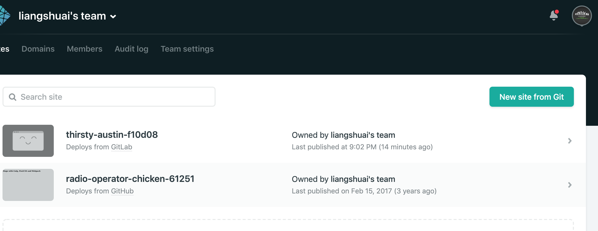
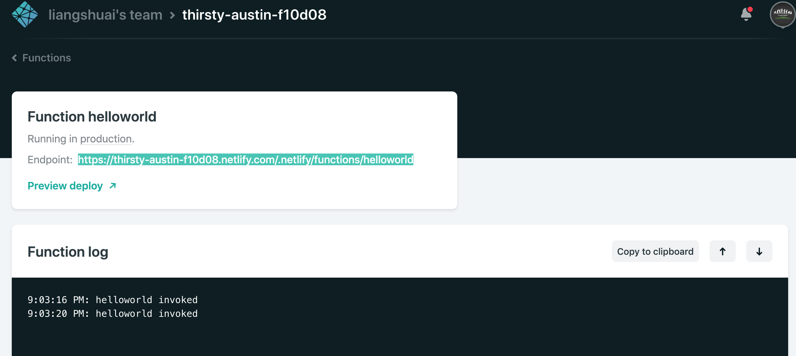
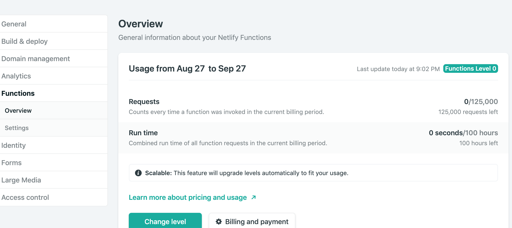

async function async1() {
console.log("async1 start"); // 同步代码2
await async2(); // 调用async2(),async2()的返回值是promise，不执行promise的resolve,让出线程
console.log("async1 end");
}
async function async2() {
console.log("async2"); // 同步代码3
}
console.log("script start"); // 同步代码1
setTimeout(function() {
// 异步 setTimeout放入event-loop中的macro-tasks队列，暂不执行
console.log("setTimeout");
}, 0);
async1();
new Promise(function(resolve) {
console.log("promise1"); // 同步代码4
resolve();
}).then(function() {
console.log("promise end"); // 不执行
});
console.log("script end"); // 同步代码5
Promise构造函数中的是同步代码
await之后的为微任务
script start
async1 start
async2
promise1
script end
async1 end
promise end
setTimeout
new Promise(resolve => {
resolve(1);
Promise.resolve().then(() => console.log(2));
console.log(4)
}).then(t => console.log(t));
console.log(3);
node.js 返回
4
3
2
1
Chrome
4
3
1
2
Promise.resolve 方法允许调用时不带参数或者参数是个非 thenable 对象或者不是一个对象，直接返回一个resolved 状态的 Promise 对象。立即 resolved 的 Promise 对象，是在本轮“事件循环”（event loop）的结束时，而不是在下一轮“事件循环”的开始时
因此 () => console.log(2) 被先push进了微任务队列

requestAnimationFrame既不属于macrotask， 也不属于microtask，而且浏览器对其处理顺序也不一致
- Chrome: microtask, requestAnimationFrame, macrotask
- Firefox: microtask, macrotask, requestAnimationFrame
compositionstart 事件触发于一段文字的输入之前（类似于 keydown 事件，但是该事件仅在若干可见字符的输入之前，而这些可见字符的输入可能需要一连串的键盘操作、语音识别或者点击输入法的备选词）。
比如在输入拼音时 经常会拼音的输入过程中也会触发到input事件， 而我们往往需要的是选完中文之后再触发事件
compositionstart 事件在用户开始进行非直接输入的时候触发，而在非直接输入结束，也即用户点选候选词或者点击「选定」按钮之后，会触发 compositionend 事件
var inputLock = false;
function do(inputElement) {
var regex = /[^1-9a-zA-Z]/g;
inputElement.value = inputElement.value.replace(regex, '');
}
inputElement.addEventListener('compositionstart', function() {
inputLock = true;
});
inputElement.addEventListener('compositionend', function(event) {
inputLock = false;
do(event.target);
})
inputElement.addEventListener('input', function(event) {
if (!inputLock) {
do(event.target);
event.returnValue = false;
}
});
Selection
Selection 对象表示用户选择的文本范围或插入符号的当前位置。 它代表页面中的文本选区， 可以跨越多个元素， 有拖拽鼠标经过文字而产生。 要获取用于检查或修改的Selection对象可以调用window.getSelection()
插入光标的位置可以通过Selection获取， 它有一个 isCollapsed 表示是否选区被压缩到一点， 即光标位置
anchorNode 表示开始选择的地方所在的节点
focusNode 表示结束选择的地方所在的节点
anchorOffset 返回一个数字， 表示的是选区起点在anchorNode中的位置偏移量
如果anchorNode是文本节点， 那么返回的就是该文本节点的第一个字开始， 直到被选中的第一个字之间的字数
如果anchorNode是一个元素， 那么返回的是选区第一个节点之前的同级节点总数
focusOffset 返回一个数字，表示选区终点在focusNode 中的位置偏移量
如果focusNode是文本节点， 那么选区末尾未选中的第一个字在该文字节点中是第几个字就返回它
如果focusNode是一个元素， 那么返回的就是选区末尾之后第一个节点之前的同级节点数
anchor 和 focus 指用户开始选择的地方和结束选择的地方， 这两个不能和选区的起始位置和终止位置混淆， 因为anchor可能在focus之前或之后
Selection对象对应的是用户选择的ranges 区域， 默认情况下改哈纳树只针对一个选区， 可以这样使用
var selObj = window.getSelection();
var range = selObj.getRangeAt(0);
rangeCount 返回该选区所包含的连续范围的数量
- selection.collapseToStart() 作用是取消当前选区， 并把光标定位在原选区的最开始处， 如果此时光标所在的位置是可编辑的， 且它获得了焦点， 那么光标会在原地闪烁
- selection.collapseToEnd() 作用是取消当前选区， 并把光标定位在原选区的最末尾处， 如果此时光标所在的位置是可编辑的， 且它获得了焦点， 则光标会在原地闪烁
- selection.containsNode(aNode, aPartlyContained) 判断指定的节点是否包含在Selection中， aNode是节点， aPartlyContained 是否允许部分包含
JS正则表达式
1、字符匹配
1.1、常⽤的元字符 1.2、量词 1.3、字符组 1.4、分⽀ 1.5、字符匹配⽅式
2、位置匹配 2.1、什么是位置匹配 2.2、^和$ 2.3、\b和\B 2.4、(?=p)和(?!p) 3、修饰符 3.1、g 3.2、i 3.3、m 4、贪婪和惰性 4.1、贪婪（尽可能多匹配） 4.2、惰性（尽可能少匹配） 5、括号的作⽤ 5.1、分组(⼦表达式) 5.2、分⽀ 5.3、捕获分组 5.4、⾮捕获分组 6、零宽断⾔（前瞻） 7、正则表达式匹配原理 7.1、原理 7.2、没有回溯的匹配 7.3、有回溯匹配 8、常⽤API 8.1 search和match 8.2 match返回结果 8.3 exec 8.4 replace
1、字符匹配
1.1、常⽤的元字符
元字符 含义 \b 匹配⼀个单词边界(boundary) \B 匹配⼀个⾮单词边界 \d 匹配⼀个数字字符(digit) \D 匹配⼀个⾮数字字符 \s 匹配⼀个空⽩字符(space) \S 匹配⼀个⾮空⽩字符 \w 匹配⼀个字⺟或者⼀个数字或者⼀个下划线(word) \W 匹配⼀个字⺟、数字和下划线之外的字符 \n 匹配换⾏ . 匹配除换⾏符以外的任意字符 ^ 匹配字符串开始位置 $ 匹配字符串结束位置 \ 字符串转义
1.2、量词
量词也属于元字符。表示字符重复的次数。表示⽅式{m, n}。如：/\d{2,5}/，表示匹配数字， 重复2-5次。
量词 等价于 描述
{m,} 表示出现m次或以上
{m} 等价于{m,m} 表示出现m次 ? 等价于{0,1} 表示出现0次或1次
+ 等价于{1,} 表示出现⾄少⼀次
* 等价于{0,} 表示出现0次或多次
1.3 字符组
⽤[]表示，或的逻辑，即匹配字符组⾥任意⼀个字符，例如[abc]，它可以是“a”、“b”、“c”之⼀。
字符组范围 连字符“-”表示范围。如：[a-zA-Z0-9]，表示匹配⼤⼩写字⺟和数字0-9。 要匹配字符“-”⾃身，则要转义或者放到字符组前⾯或后⾯。如果：[a-b]或[ab-] 字符组取反
字符组开头⽤^, 表示取反。如：'aregex'.match(/1/g)，表示匹配除ae外的字符
特殊字符 字符组⾥⾯特殊字符可以不转义，[.^$／-]。
1.4 分支
分⽀⽤|分隔，表示匹配⼦模式中任意⼀个。表示⽅式：(p1|p2|p3)，其中p1、p2和p3是⼦模式。 如果每个分⽀值匹配⼀个字符，等价于[]。
分⽀⼦模式可以是多个字符
1.5 字符匹配⽅式
横向匹配 匹配字符串，某个或者某⼏个字符出现的次数是不固定的，即⽤量词表示{m, n}; 如：/ab{2}/ 匹配b出现2次 /(ab){2, 5}/ 匹配ab出现2-5次。 纵向匹配 单个字符的纵向匹配，⽤字符组。如：[abc]，表示a、b、c任意⼀个。 多个字符的纵向匹配，则要使⽤分⽀。如：/(ab|ac)a/ 表示aba、aca
2 位置匹配
位置是相邻字符之间的位置。
2.2、^和$
^匹配开头，在多⾏匹配中匹配⾏开头。 $匹配结尾，在多⾏匹配中匹配⾏结尾。
2.3、\b和\B
\b是单词边界，即\w和\W之间的位置，也包括\w和^之间的位置，也包括\w和$之间的位置。 \B就是\b的反⾯的意思，⾮单词边界。例如在字符串中所有位置中，扣掉\b，剩下的都是\B的。
2.4、(?=p) 和(?!p)
零宽断⾔
3、 修饰符
3.1、g
默认从坐到右匹配，匹配到⼀个结果就停⽌。g开启全局匹配，会找到所有的匹配，单词是global
3.2、 i
忽略字⺟⼤⼩写，单词ingoreCase
3.3、m
多⾏匹配，遇到\n则分⾏，每⼀⾏都能匹配开始结束位置。单词是multiline
4、贪婪和惰性
量词（*, ?, +, {n}, {n,}, {n,m}）匹配是分贪婪和惰性的，默是贪婪匹配。量词后⾯加？则表示惰性。
4.1、贪婪（尽可能多匹配）
匹配到⼀个结果后，继续往后匹配，直到不满⾜条件为⽌。
'123456xx'.match(/\d+/g);
// => ["123456"]
'123456xx'.match(/\d{2,5}/g);
// => ["12345"]
var str = '<img src="1.jpg" />aaa<img src="2.jpg" />';
var reg = /<img.*>/g;
str.match(reg);
// => ["<img src="1.jpg" />aaa<img src="2.jpg" />"]
4.2、惰性（尽可能少匹配）
匹配到⼀个结果后则停⽌。
// 匹配数字
'123456xx'.match(/\d+?/g);
// => ["1", "2", "3", "4", "5", "6"]
'123456xx'.match(/\d{2,5}?/g);
// => ["12", "34", "56"]
// 匹配img标签
var str = '<img src="1.jpg" />aaa<img src="2.jpg" />';
var reg = /<img.*?>/g;
str.match(reg);
// ["<img src="1.jpg" />", "<img src="2.jpg" />"]
// 也可以这样写
// var reg = /<img[^>]*>/g;
5、括号的作⽤
5.1、分组(⼦表达式)
如果需要匹配多个字符，则需使⽤分组，括号⾥⾯的表达式则叫⼦表达式。
1 var reg = /(ab)+/g;
2 var str = "ababa abbb ababab";
3 str.match(reg)
4 // => ["abab", "ab", "ababab"]
5.2、分⽀
可以作为⼀个分⽀使⽤。 如：匹配北京座机(010-xxxxxxx)和⼴州座机(020-xxxxxxxx)
1 var reg = /^((010)|(020))-\d{8}$/g;
2 // var reg = /^(0[12]0)-\d{8}$/g
3 reg.test('020-23456784');
5.3、捕获分组
- 表达式外捕获 即对⼦表达式的匹配结果进⾏引⽤，可⽤于数据提取和字符串替换。
- 数据提取 使⽤字符串的match()，或者正则的exec()⽅法
1 var reg = /(\d{4})-(\d{2})-(\d{2})/;
2 var str = '2019-10-29';
3 str.match(reg);
4 // => ["2019-10-29", "2019", "10", "29", index: 0, input: "2019-10-29", groups: undefined]
5 reg.exec(str);
6 // => ["2019-10-29", "2019", "10", "29", index: 0, input: "2019-10-29", groups: undefined]
- 字符串替换 ⽤$1,$2,$3…$9表示分组匹配的结果，或⽤全局变量Regexp.$1,Regexp.$2,…Regexp.$9表示。 如：替换p标签为span
1 var str = '<p class="p">xxx</p><div>ddd</div><p title="hehhe"></p>';
2 var reg = /<(\/?)p(.*?)>/g;
3 str.replace(reg, '<$1span$2>');
4 // => "<span class="p">xxx</span><div>ddd</div><span title="hehhe"></span>"
-
表达式内捕获(反向引⽤) 正则表达式中，对括号⾥⾯的⼦表达式进⾏引⽤。\1,\2,\3…\9。 如：匹配⽇前格式：2019-10-29，2019/10/29，2019.10.29 不严瑾的写法
1 var reg = /^\d{4}[./-]\d{2}[./-]\d{2}$/ 2 reg.test('2019-10-29'); 3 reg.test('2019/10/29'); 4 reg.test('2019.10.29'); 5 // => true 6 7 reg.test('2019.10/29'); 8 // => true严瑾的写法
1 var reg = /^\d{4}([/.-])\d{2}\1\d{2}$/ 2 reg.test('2019-10-29'); 3 reg.test('2019/10/29'); 4 reg.test('2019.10.29'); 5 // => true 6 7 reg.test('2019.10/29'); 8 // => false5.4、⾮捕获分组
捕获分组的作⽤，⽅便后续引⽤。如果不想引⽤，则使⽤⾮捕获分组(?:p) 。 ⾮捕获分组可以节省内存消耗。 如：修改前⾯的表达式
1 var str = '<p class="p">xxx</p><div>ddd</div><p title="hehhe"></p>'; 2 var reg = /<(?:\/?)p(?:.*?)>/g; 3 str.replace(reg, '<$1span$2>'); 4 // "<$1span$2>xxx<$1span$2><div>ddd</div><$1span$2><$1span$2>"6、零宽断⾔（前瞻）
有时要匹配某个位置之前或之后应该有什么内容，叫零宽断⾔。 零宽(zero-width)是什么意思？指的就是它匹配⼀个位置，本身没有宽度。 断⾔(assertion)是什么意思？指的是⼀种判断，断⾔之前或之后应该有什么或应该没有什么。
表达式 名称 描述 (?=exp) 正向前瞻 匹配后⾯满⾜表达式exp的位置 (?:exp) 负向前瞻 匹配后⾯不满⾜表达式exp的位置 (?<=exp) 正向后瞻 匹配前⾯满⾜表达式exp的位置（JS不⽀持） (?<!exp) 负向后瞻 匹配前⾯不满⾜表达式exp的位置（JS不⽀持）
1 var reg1 = /bed(?=room)/ // 匹配bed后面为room的字符串。 2 var reg2 = /bed(?!room)/ // 匹配bed后面不为room的字符串 3 var str1 = ‘bedroom’; 4 var str2 = ‘bedding’; 5 reg1.test(str1); 6 reg2.test(str2);如下例⼦，更能体现零宽断⾔，匹配的是⼀个位置。
1 var reg = /a(?=b)c/; 2 var str = "abc"; 3 str.match(reg); 4 // => null第1步：匹配表达式a通过 第2步：匹配表达式(?=b)也通过 第3步：匹配表达式c，是从“abc”的b位置开始匹配，此时匹配到的是ac，不通过。 第4步：从字符串“abc”的b继续开始匹配，不通过。 第5步：从字符串“abc”的c继续开始匹配，不通过。
改成如下则通过。
1 var reg = /a(?=b)bc/; 2 var str = "abc"; 3 str.match(reg); 4 // => ["abc", index: 0, input: "abc", groups: undefined]应⽤：去掉除表情外的富⽂本。
1 // 清空不包含class=“w_emoji”的的html标签 2 var str = ` 3 <div class="wrap"> 4 <img class="w_emoji" src="xxxxxx" title="表情"/> 5 <p>pppp</p> 6 <h3><strong>h3h3h3</strong></h3> 7 <img calss="b" src="dddd" /> 8 </div> 9 `; 10 var reg = /<(?!img class="w_emoji").*?>/gi; 11 str.replace(reg, ''); 12 13 // <img class="w_emoji" src="xxxxxx" title="表情"/> 14 // pppp 15 // h3h3h37、正则表达式匹配原理
7.1、原理
正则表达式匹配字符串的这种⽅式，叫回溯法。 回溯法也称试探法，它的基本思想是：从问题的某⼀种状态（初始状态）出发，搜索从这种状态出发所能 达到的所有“状态”，当⼀条路⾛到“尽头”的时候（不能再前进），再后退⼀步或若⼲步，从另⼀种可能“状 态”出发，继续搜索，直到所有的“路径”（状态）都试探过。这种不断“前进”、不断“回溯”寻找解的⽅ 法，就称作“回溯法”。（copy于百度百科）。
7.2 没有回溯的匹配
假设我们的正则是/ab{1,3}c/ ，其可视化形式是：
当⽬标字符串是"abbbc"时，就没有所谓的“回溯”。其匹配过程是： 其中⼦表达式b{1,3} 表示“b”字符连续出现1到3次。
7.3、有回溯匹配
如果⽬标字符串是"abbc"，中间就有回溯。
图中第5步有红颜⾊，表示匹配不成功。此时b{1,3} 已经匹配到了2个字符“b”，准备尝试第三个时，结 果发现接下来的字符是“c”。那么就认为b{1,3} 就已经匹配完毕。然后状态⼜回到之前的状态（即第6 步，与第4步⼀样），最后再⽤⼦表达式c ，去匹配字符“c”。当然，此时整个表达式匹配成功了。 量词和分⽀都可能会出现回溯现象。
8、常⽤API
-
String#search
-
String#match
-
String#split
-
String#replace
-
RegExp#test
-
RegExp#exec
8.1 search和match
String的4个⽅法，都⽀持正则表达式，search和match会把字符串⾃动转成正则表达式。
1 var string = "2017.06.27";
2
3 console.log( string.search(".") );
4 // => 0
5 //需要修改成下列形式之一
6 console.log( string.search("\\.") );
7 console.log( string.search(/\./) );
8 // => 4
9 // => 4
10
11 console.log( string.match(".") );
12 // => ["2", index: 0, input: "2017.06.27"]
13 //需要修改成下列形式之一
14 console.log( string.match("\\.") );
15 console.log( string.match(/\./) );
16 // => [".", index: 4, input: "2017.06.27"]
17 // => [".", index: 4, input: "2017.06.27"]
8.2 match返回结果
返回的结果的格式，与正则对象是否有修饰符g有关。
- 没有g，返回的是标准匹配格式，即，数组的第⼀个元素是整体匹配的内容，接下来是分组捕获的内 容，然后是整体匹配的第⼀个下标，最后是输⼊的⽬标字符串。
- 有g，返回的是所有匹配的内容。
- 当没有匹配时，不管有⽆g，都返回null。
1 var reg1 = /\d([a-z])/;
2 var reg2 = /\d([a-z])/g;
3 var str = '12ab34ef';
4 str.match(reg1);
5 // => ["2a", "a", index: 1, input: "12ab34ef", groups: undefined]
6 str.match(reg2);
7 // => ["2a", "4e"]
8.3 exec
⾮全局模式下，exec和match返回的结果是⼀样的。 全局模式下(g)，可多次执⾏，匹配下标会不断变化，此值作为下次匹配的开始。下标也可以通过正则实例 访问，如：reg.lastindex
1 var reg1 = /\d([a-z])/;
2 var reg2 = /\d([a-z])/g;
3 var str = '12ab34ef';
4 reg1.exec(str);
5 // => ["2a", "a", index: 1, input: "12ab34ef", groups: undefined]
6
7 reg2.exec(str);
8 // => ["2a", "a", index: 1, input: "12ab34ef", groups: undefined]
9 reg2.exec(str);
10 // => ["4e", "e", index: 5, input: "12ab34ef", groups: undefined]
11 reg2.exec(str);
12 // => null
8.4 replace
语法（str.replace(regexp|substr, newSubStr|function)） 第⼀个参数可为字符或者正则表达式。 第⼆个参数可以是要替换的字符串，或者⼀个函数，该函数的返回值将替换掉第⼀个参数匹配到的结 果。 函数的参数
变量名 代表的值 match 匹配的⼦串。（对应于上述的$&。） p1,p2, ... 假如replace()⽅法的第⼀个参数是⼀个RegExp 对象，则代表第n个括号匹配的字符串。（对应于上述的$1，$2等。）例如，如果是⽤ /(\a+) (\b+)/ 这个来匹配， p1 就是匹配的 \a+ ， p2 就是匹配的 \b+ 。 offset 匹配到的⼦字符串在原字符串中的偏移量。（⽐如，如果原字符串 是 'abcd' ，匹配到的⼦字符串是 'bc' ，那么这个参数将会是 1） string 被匹配的原字符串。 NamedCaptureGroup 命名捕获组匹配的对象
节流与防抖
简化版
const limit = function (fn, wait, debounce) {
let timer = null
return function () {
const args = arguments
const context = this
if (debounce) clearTimeout(timer)
if (debounce || !timer) {
timer = setTimeout(() => {
fn.apply(context, args)
timer = null
}, wait)
}
}
}
const debounce = (fn, wait, options) => {
return limit(fn, wait, true)
}
const throttle = (fn, wait, options) => {
return limit(fn, wait, false)
}
简化版throttle有一些问题， 因为最后触发之后在wait时间内还有触发会被忽略
const throttle = (fn, wait) => {
let timer, last = 0;
return () => {
const ctx = this;
const args = arguments;
const now = new Date().getTime();
const remaining = last ? last + wait - now : 0;
const later = () => {
timer = null
last = new Date().getTime()
fn.apply(ctx, args)
}
if (remaining > 0) {
clearTimeout(timer)
setTimeout(later, remaining)
} else {
later()
}
}
}
common.js 和 es6 中模块引入的区别
- commonjs模块输出的是值的拷贝， ESM输出的是值的引用
- CommonJS是运行时加载的，ESM是编译时输出的接口
- CommonJS是单shi个值导出， ESM可以导出多个
- CommonJS可以写在判断中， ESM只能写在开头
- CommonJS的this是当前模块， ESM的this是undefined
Node.js相关
Node.js架构
Node.js架构主要分为三层， 应用App -> V8及node内置架构-> 操作系统， V8是Node运行的环境， 可以理解为Node虚拟机
Node.js内置架构又可以分为三层：核心模块JavaScript实现 -> C++绑定 -> Libuv + CAes + HTTP

Node.js核心模块
EventEmitter、Stream、FS、Net 和全局对象
全局对象有： process、console、Buffer、exports
错误优先的回调函数
错误优先的回调函数第一个参数是错误对象， 用于检查程序是否发生错误， 其余参数用于传递数据
Node.js异常处理
分为不同的场景， 比如
- throw new Error('msg')
- Try-catch-finally
- express中使用中间件
app.use((err, req, res) => { ... }) - 全局异常
process.on('uncaughtException', err => { ... })
process.on('unhandledRejection', err => { ... })
Node.js try-catch中异步异常无法捕获
try {
setTimeout(() => {
throw new Error('err')
})
} catch (e) {
console.log(e)
}
上面的catch并不能捕获到异常， 是因为setTimeout的宏任务在执行的时候try-catch的栈已经退出了， 上下文环境已经改变了， 所以不能捕获到异常。 这里把setTimeout换成promise或其它微任务同样无法catch
处理办法
setTimeout(() => {
try {
throw new Error()
} catch (e) {
console.log(e)
}
})
// 如果需要获取Error对象
const promise = new Promise((resolve, reject) => {
setTimeout(() => {
try {
throw new Error()
} catch (e) {
reject(e)
}
})
})
promise.then(() => { ...})
.catch(err => {
...
})
promise内部抛出的异常在try-catch中也无法捕获， 因为promise内部的错误不会冒泡出来， 只有通过promise.catch才能捕获
Stream
流是数据的集合，就像数组或字符串一样， 区别在于流中的数据可能不会立刻全部 可用， 并且不需要一次性把这些数据全部放入内存， 这样操作大量数据或从外部来源逐段发送过来的时候变得非常有用

流的类型
Node.js中有四种基本类型的流
- 可读流
- 可写流
- 双向流
- 变换流
可读流是对一个可以读取数据的源的抽象， fs.createReadStream就是一个例子
可写流是对一个可以写入数据的目标的抽象， fs.createWriteStream就是一个例子
双向流既是可读的， 又是可写的。 TCP Socket就属于这种
变换流是一种特殊的双向流， 它会基于写入的数据生成可供读取的数据， 例如zlib.createGzip来压缩数据
所有的流都是EventEmitter 的实例。
pipe方法
readableSrc.pipe(writeableDest)
以管道的方式把一个可读流的输出连接到了一个可写流的输入， 管道的上游必须是一个可读流， 下游必须是一个可写流。 当然它们也可以是双向流或变换流
a.pipe(b).pipe(c).pipe(d)
# 等价于:
a.pipe(b)
b.pipe(c)
c.pipe(d)
# 在 Linux 中，等价于：
$ a | b | c | d
流事件
除了从可读流中读取数据写入可写流外， pipe方法还自动处理了一些其它情况， 比如错误处理、文件结尾、读取写入速度不一致的情况
流也可以直接通过事件读取
# readable.pipe(writable)
readable.on('data', (chunk) => {
writable.write(chunk);
});
readable.on('end', () => {
writable.end();
});
可读流上最重要的两个事件
- data事件 任何时候当可读流发送数据给它的消费者时， 会触发此事件
- end事件 当可读流没有更多的数据要发给消费者时触发此事件
可写流上最重要的两个事件
- drain事件， 这是一个表示可写流可以接受更多数据的信号
- finish事件， 当所有数据都被写入底层系统后会触发此事件
协议相关
4.1.2 tcp流是分段的， 由IP分组传送
TCP数据是通过名为IP分组的小数据块来发送的。
HTTP要传送一条报文时， 会以流的形式将报文数据的内容通过一条打开的TCP连接按序传输， TCP收到数据流后，会将数据流砍成段的小数据块， 并将段用封装在IP分组中， 通过因特网进行传输。
每个IP分组中包含
- 一个IP分组首部(通常20个字节)
- 一个TCP段首部（通常20个字节）
- 一个TCP数据块
4.1.3 保持TCP连接持续不断的运行
IP协议到机器， TCP协议通过端口到应用

4.1.4 用TCP套接字编程
略
4.2 对TCP性能的考虑
4.2.2 性能聚焦区域
- TCP连接建立握手
- TCP慢启动拥塞控制
- 数据聚集的Nagle算法
- 用于捎带确认的TCP延迟确认算法
- TIME_WAIT时延和端口耗尽
4.2.3 握手时延
现代的TCP栈都允许在客户端第三次握手的确认分组中发送数据
4.2.4 延迟确认
TCP实现了自己的确认机制来确保数据的成功传输， 每个TCP段都有一个序列号和数据完整性校验和，每个段的接收者收到完好的段时， 都会向发送者回送一个小的确认分组， 如果指定时间内没有收到确认信息就重新发送数据。 由于确认报文很小， 所以通常和数据分组合并到一起发送。
延迟确认算法在一个 特性的时间窗口内将输出确认放在缓冲区内， 以寻找能够捎带它的输出数据分组， 如果没有数据分组， 那么就单独发送。
4.2.5 TCP慢启动
TCP数据传输的性能还取决于TCP连接的使用期 ， TCP会随时间进行自我调谐，起初限制最大速度， 传输成功后提升速度（比如每次提升一倍的传输分组数）， 这个过程叫慢启动 ， 用于防止因特网的突然过载和拥塞。
算法相关
TopK 问题可以使用大顶堆 或 小顶堆 来实现，
堆是具有以下性质的完全二叉树
大顶堆： 每个节点的值都大于或等于其左右孩子节点的值
小顶堆： 每个节点的值都小于或等于其左右孩子节点的值
堆可以映射为数组， 此时
大顶堆： a[i] >= a[2i + 1] && a[i] >= a[2i + 2]
小顶堆： a[i] <= a[2i + 1] && a[i] <= a[2i + 2]
排序步骤
- 把默认数组先当做一个完全二叉树， 那么第一个非叶子节点就是 index = Math.floor(length / 2) - 1 ， i记为数组长度
- 比较index 和 2 * index + 1 以及 2 * index + 2 索引位置的值， 把该处先改为大顶堆
- 递减index 到 0， 此时最大的值就在堆顶
- 交换堆顶和结尾倒数第i个值， 此时最大值在结尾
- 递减i， 重复2-4， 依次得到topK
function topKMaxOfArr(k, arr) {
function swap(a, b) {
var t = arr[a];
arr[a] = arr[b];
arr[b] = t;
}
var i, j;
//只需循环k次
for (i = arr.length; i > arr.length - k; i--) {
for (j = Math.floor(i / 2) - 1; j >= 0; j--) {
if (arr[j] < arr[2 * j + 1]) {
swap(j, 2 * j + 1);
}
if (2 * j + 2 < i && arr[j] < arr[2 * j + 2]) {
swap(j, 2 * j + 2);
}
}
swap(i - 1, 0);
}
return arr.slice(arr.length - k);
}
//用法示例
var arr = [4, 2, 5, 6, 77, 33, 21, 44, 55, 22], k = 5;
console.log(topKMaxOfArr(k, arr));//返回数组[22, 33, 44, 55, 77]
file:///Applications/Typora.app/Contents/Resources/TypeMark/app/main.js
解法一
var lengthOfLongestSubstring = function(s) {
if (!s) return 0
var max = 1;
let map;
for (let i = 1; i < s.length; i++) {
let charI = s[i];
map = {
[charI]: true
};
let maxI = 1
for (let j = i - 1; j >= 0; j--) {
let charJ = s[j];
if (map[charJ]) {
maxI = i - j;
break;
} else {
map[charJ] = true;
maxI = maxI + 1;
}
}
max = Math.max(maxI, max)
}
return max
};
解法二
var lengthOfLongestSubstring = function(s) {
if (!s) return 0;
var max = 0;
let map = {};
for (let i = 0, j = 0; i < s.length; i++) {
let char = s[i];
if (map[char] !== undefined) {
j = Math.max(map[char] + 1, j)
}
max = Math.max(max, i - j + 1)
map[char] = i
}
return max
};
方法1
var getNumChar = function (numStr) {
return String.fromCharCode(Number.parseInt(numStr) + 97)
}
var translateNum = function(num) {
var str = '' + num;
var list = []
var map = {}
var len = str.length
for (let i = 0; i < len; i++) {
map[i] = map[i] || []
map[i].push(str[i])
if (i < len - 1 && +str[i] > 0 && +str[i] < 3 && Number.parseInt(str[i] + str[i + 1]) <= 25) {
map[i].push(str[i] + str[i + 1])
}
}
var buildResult = function (result, index) {
if (index > len - 1) {
list.push(result)
}
var curr = map[index]
for (let i = 0; curr && i < curr.length; i++) {
buildResult(result + getNumChar(curr[i]), index + curr[i].length)
}
}
buildResult('', 0)
return list.length
};
function TreeNode (val) {
this.val = val;
this.left = this.right = null;
}
// 递归解法
var inorderTraversal = function(root) {
var result = []
var inorderTraversalNode = function (node) {
if (!node) return
if (node.left) inorderTraversalNode(node.left)
result.push(node.val)
if (node.right) inorderTraversalNode(node.right)
}
inorderTraversalNode(root)
return result
};
// 非递归解法， 用栈来模拟递归解法的调用栈
// 栈S;
// p= root;
// while(p || S不空){
// while(p){
// p入S;
// p = p的左子树;
// }
// p = S.top 出栈;
// 访问p;
// p = p的右子树;
// }
var inorderTraversal = function(root) {
var result = []
var curr = root
var stack = []
while (curr || stack.length) {
while (curr) {
stack.push(curr)
curr = curr.left
}
curr = stack.pop()
result.push(curr.val)
curr = curr.right
}
return result
}
var root = new TreeNode(1)
var node2 = new TreeNode(2)
var node3 = new TreeNode(3)
root.right = node2
node2.left = node3
console.log(inorderTraversal(root))
function TreeNode (val) {
this.val = val;
this.left = this.right = null;
}
// 递归解法
// function preorderTraversal (root) {
// var result = []
// var preorderTraversalNode = function (node) {
// if (node) {
// result.push(node.val)
// preorderTraversalNode(node.left)
// preorderTraversalNode(node.right)
// }
// }
// preorderTraversalNode(root)
// return result
// }
// 非递归解法， 用栈来模拟递归解法的调用栈
function preorderTraversal (root) {
var result = []
var queue = []
var curr = root
while (curr) {
result.push(curr.val)
curr.right && queue.push(curr.right)
curr.left && queue.push(curr.left)
curr = queue.pop()
}
return result
}
var root = new TreeNode(1)
var node2 = new TreeNode(2)
var node3 = new TreeNode(3)
root.right = node2
node2.left = node3
console.log(preorderTraversal(root))
/**
* initialize your data structure here.
*/
var MinStack = function() {
this.data = []
this.min_stack = [Infinity]
};
/**
* @param {number} x
* @return {void}
*/
MinStack.prototype.push = function(x) {
this.data.push(x);
this.min_stack.unshift(Math.min(x, this.min_stack[0]))
};
/**
* @return {void}
*/
MinStack.prototype.pop = function() {
if (!this.data.length) return;
var val = this.data.pop();
this.min_stack.shift()
return val
};
/**
* @return {number}
*/
MinStack.prototype.top = function() {
if (!this.data.length) return;
return this.data[this.data.length - 1]
};
/**
* @return {number}
*/
MinStack.prototype.getMin = function() {
if (!this.min_stack.length) return
return this.min_stack[0]
};
var minStack = new MinStack();
minStack.push(-2);
minStack.push(0);
minStack.push(-3);
console.log(minStack.getMin());
console.log(minStack.pop());
console.log(minStack.top())
console.log(minStack.getMin());
var twoSum = function(numbers, target) {
let left = 0;
let right = numbers.length - 1;
while (left < right) {
if (numbers[left] + numbers[right] === target) {
return [left + 1, right + 1]
} else if (numbers[left] + numbers[right] < target) {
left++
} else {
right--
}
}
};
console.log(twoSum([2, 7, 11, 15], 9))
function coinExchange (coins, amount) {
const dp = []
dp[0] = 0
for (let i = 1; i <= amount; i++) {
dp[i] = Number.MAX_SAFE_INTEGER
for (let j = 0; j < coins.length; j++) {
const coin = coins[j]
if (i - coin >= 0) {
dp[i] = Math.min(dp[i - coin] + 1, dp[i])
}
}
}
return dp[amount] !== Number.MAX_SAFE_INTEGER ? dp[amount] : -1
}
console.log(coinExchange([1, 2, 5], 11))
var canFinish = function (piles, speed, hour) {
var time = 0;
piles.forEach(function (pile) {
time += Math.floor(pile / speed) + (((pile % speed) > 0) ? 1 : 0);
});
return time <= hour;
}
var minEatingSpeed = function(piles, H) {
var max = Math.max.apply(null, piles);
var left = 0;
var right = max;
while (left < right) {
var mid = left + (Math.floor((right - left) / 2));
if (canFinish(piles, mid, H)) {
right = mid;
} else {
left = mid + 1;
}
}
return left;
};
Rust编程之道
2.1 Rust语言的基本构成
- 语言规范
- 编译器
- 核心库
- 标准库
- 包管理器
rustc负责将Rust源代码编译为可执行文件或其它库文件
rustc跨平台、支持交叉编译、使用LLVM作为编译器后端、rustc也使用Rust编写
Rust语言的语法是由核心库和标准库共同提供， 核心库是标准库的基础
在顶部使用#! [no_std] 来使用核心库， 可以用来做嵌入式应用开发
标准库除了与核心库一直的trait、基本数据类型、功能性数据类型和常用宏外， 还提供了并发、IO、运行时、平台抽象、底层操作接口、可选和错误处理类型等。
包管理器
cargo new bin_crate
cargo new --lib lib_crate
通过cargo build和cargo run命令可以对项目进行编译和运行
2.2 语句和表达式
语句是指要执行的一些操作和产生副作用的表达式
语句分为声明语句和表达式语句
名字以叹号结尾， 并且可以想函数一样被调用的语句， 在Rust中叫做宏
块表达式是由一对花括号和一系列表达式组成， 它总是返回块中最后一个表达式的值，如果最后一个语句是宏语句， 就返回单元值()
2.3 变量和绑定
通过let 关键字来创建变量
Rust中的表达式一般可以分为位置表达式和值表达式， 通过位置表达式可以对某个数据单元的内存进行读写， 只要是进行写操作
值表达式一般只引用了某个存储单元地址中的数据， 它相当于数据值，只能进行读操作
let 关键字声明的位置表达式默认不可变，为不可变绑定。 可以添加mut 关键字声明可变的位置表达式， 即可变绑定， 可变绑定可以正常修改和赋值
每个变量绑定实际上都拥有该存储单元的所有权， 引用赋值给其它变量， 这种转移内存地址的行为就是所有权的转移， 有时不需要转移所有权， Rust提供引用操作符 & 可以直接获取表达式的存储单元地址，即内存位置，可以通过内存位置对存储进行读取。
fn main() { let a = [1, 2, 3]; let b = &a; // 这不会引起所有权的转移， 因为右侧变为了位置上下文， 而非默认的值上下文 println!("{:p}", b); // 0x7ffXXXXXXX 这个{：p} 格式打印指针地址 let mut c = vec![1, 2, 3]; let d = &mut c; // 获取可变引用 d.push(4); println!("{:?}", d); // [1, 2, 3, 4]; let e = &42; assert_eq!(42, *e); }
2.4 函数和闭包
#![allow(unused)] fn main() { pub fn fizz_buzz(num: i32) -> String{ //... } }
rust编译器会严格按照上面的类型声明， 如果不是的话就会编译报错
Rust语言的作用域是静态作用域， 即词法作用域， 由一对花括号来开辟作用域， 其作用域在词法分析阶段就已经确定了， 不会动态改变
let声明变量之后还可以再次声明变量绑定， 这种连续用let定义同名变量的做法叫做变量遮蔽Variable Shadow， 最终变量的值是由最后一个变量定义所决定的。
Rust中函数是一等公民， 这意味着函数自身就可以作为函数的参数和返回值使用。
#![allow(unused)] fn main() { pub fn math(op: fn(i32, i32) -> i32, a: i32, b: i32) -> i32 { // ... } fn true_maker() -> fn() -> bool { fn is_true() -> bool { true } } }
CTFE编译时函数执行， Compile-Time Function Execution
闭包也叫匿名函数， 有一下几个特点
- 可以想函数一样被调用
- 可以驳火上下文环境中的自由变量
- 可以自动推断输入和返回的类型
fn main() { let out = 42; // fn add(i: i32, j: i32) -> i32 { i + j + out } 报错 let closure_annotatedd = |i: i32, j: i32| -> i32 { i + j + out }; let closure_inferred = |i, j| i + j + out; assert_eq!(45, closure_inferred(1, 2)); }
闭包和函数一个重要的区别是闭包可以捕获外部变量， 而函数不可以
闭包也可以作为函数参数和返回值， 但使用起来略有区别
fn math<F: Fn() -> i32>(op: F) -> i32 { op() } fn main () { let a = 2; let b = 3; assert_eq!(math(|| a + b), 5); }
math参数是一个泛型F， 并且该泛型受Fn() -> i32 trait的限定， 代表该函数只允许实现Fn() -> i32 trait 的类型作为参数
Rust中闭包实际上就是由一个匿名函数体和trait来组合实现的
闭包同样也可以作为返回值
#![allow(unused)] fn main() { fn two_times_impl () -> impl Fn(i32) -> i32 { let i = 2; move |j| i * j } }
返回闭包时使用了move关键字， 这是因为一般情况下， 闭包默认会按引用捕获变量， 如果将闭包返回， 引用也会跟着返回， 但是在整个函数调用完毕后， 函数内的本地变量i就会被销毁， 那么随闭包返回的变量i的引用就会成为悬垂指针， 使用move关键字将捕获变量i的所有权转移到闭包中， 就不会按引用进行捕获变量
2.5 流程控制
rust中不叫流程控制语句， 而叫流程控制表达式
条件表达式
if表达式的分支必须返回同一个类型的值才可以， 这也是rust没有三元运算符的原因。
fn main() { let n = 13; let big_n = if (n < 10 && n > -10) { 10 * n } else { n / 2 }; assert_eq!(big_n, 6) }
for...in表达式
fn main () { for n in 1..101 { println!("{}", n); } }
while表达式
#![allow(unused)] fn main() { fn while_true(x: i32) -> i32 { while true { return x + 1; } // x } }
上面的代码会报错， 因为while true循环返回的时单元值， 而函数返回值是i32， 所以不匹配
这是因为Rust编译器在对while循环做流分析 Flow Sensitive的时候不会检查循环条件， 编译器会认为while循环条件可真可假， 所以循环体内的表达式就会被忽略， 因此只知道while_true 返回的是单元值
, 可以在最后一行加x变量
match表达式
fn main() { let number = 42; match number { 0 => println!("origin"), 1...3 => println!("all"), | 5 | 7 | 13 => println!("bad luck"), n @ 42 => println!("{}", n), _ => println!("common"), } }
上面的例子演示了 单个值、范围、多个值、匹配并绑定给变量（绑定模式）、通配符的情况
fn main() { let mut v = vec![1,2,3,4,5]; loop { match v.pop() { Some(x) => println!("{}", x), None => break, } } }
if let 表达式
#![allow(unused)] fn main() { let boolean = true; let mut binary = 0; if let true = boolean { binary = 1; } }
While let表达式
fn main() { let mut v = vec![1,2,3,4,5]; while let Some(x) = v.pop() { println!("{}", x); } }
2.6 基本数据类型
布尔类型
布尔类型只有两个值true 和 false
#![allow(unused)] fn main() { let x = true; let y: bool = false; }
任意比较操作都会产生bool类型
也可以使用as 操作符将bool类型转换为数组0 和 1， 但是rust并不支持将数字转换为bool类型
基本数字类型
Rust提供的基本数字类型大致上可以分为三类： 固定大小的类型、动态大小的类型和浮点数
- 固定大小的类型
包括无符号整数和 符号整数
u8、u16、u32、u64、u128
i8、i16、i32、i64、i128（-2^127 ~ 2^127 -1）
- 动态大小的类型
usize 根据机器的字长 32或64
isize 根据机器字长
- 浮点数类型
f32和 f64
fn main() { let num = 42u32; let num: u32 = 42; let num = 0x2A; let num = 0o106; // 八进制 let num = 0b1001_1100; // 二进制 assert_eq!(b'*', 42u8); assert_eq!(b'\'', 39u8); }
-
字符类型
Rust使用单引号来定义字符类型，代表一个unicode标量值， 每个字符占4个字节
-
数组类型
是Rust内建的原始集合类型，数组大小固定， 元素均为同类型，默认不可变。
数组的类型签名为[T;N], T是一个泛型标记，N是数组长度， 必须编译时确定其值
Go语言
Go语言圣经读书笔记
程序结构
2.1 命名
Go语言的命名规则：
一个名字必须以字母或下划线开头， 后面可以跟任意数量的字母、数字、下划线， 大小写敏感。
Go语言的关键字有
break default func interface select
case defer go map struct
chan else goto package switch
const fallthrough if range type
continue for import return var
此外还有30个预定义的名字， 主要对应内建的常量、类型、函数
内建常量: true false iota nil
内建类型: int int8 int16 int32 int64
uint uint8 uint16 uint32 uint64 uintptr
float32 float64 complex128 complex64
bool byte rune string error
内建函数: make len cap new append copy close delete
complex real imag
panic recover
这些预定义的名字并不是关键字， 可以在定义中重新使用它们
名字定义在函数内部， 只有函数内生效。
如果定义在函数外部， 那么当前包所有的文件都可以访问
名字开头字母的大小写决定了名字在包外的可见性
包名一般总是小写字母
名字长度没有限制， 但尽量使用短小的名字， 推荐驼峰式命名
2.2 声明
Go语言中主要有四种类型的声明语句： var 、const 、type 、func 分别对应变量、常量、类型和函数实体对象的声明。
每个go源文件以包声明语句开始， 其后跟import语句导入依赖的其它包， 然后是包一级的类型、变量、常量、函数声明语句。
包级别声明的语句在整个包的每个源文件中都可以访问， 而不仅仅在其声明语句所在的源文件中
一个函数的声明由函数名字、参数列表、一个可选的返回值列表 和包含函数定义的函数体组成
func fToC(f float64) float64 {
return (f - 32) * 5 / 9
}
2.3 变量
var 变量名字 类型 = 表达式
类型和表达式可以省略其中的一个， 如果不声明表达式， 那么将使用零值初始化该变量。 数值类型为0， 布尔false，字符串为空字符串， 接口或引用类型为nil
零值初始化机制可以确保每个声明的变量总是有一个良好定义的值， 因此Go中不存在未初始化的变量
也可以在声明语句中同时声明一组变量或用一组初始化表达式声明并初始化一组变量， 如果省略每个变量的类型，将可以同时声明多个类型不同的变量
var i, j, k int // int, int, int
var b, f, s = true, 2.3, "four" // bool, float64, string
初始化表达式可以是字面量或任意表达式， 在包级别声明的变量会在main函数执行前完成初始化， 局部变量将在声明语句被执行到的时候进行初始化
一组变量也可以通过调用一个函数， 由函数返回的多个返回值初始化
var f, err = os.Open(name)
在函数内部有一种称为简短变量声明语句的形式可以用于声明和初始化局部变量。
anim := gif.GIF{LoopCount: nframes}
freq := rand.Float64() * 3.0
i, j := 0, 1
f, err := os.Open(name)
简短变量声明被广泛用于大部分的局部变量的声明和初始化，var形式的声明通常用于需要显示指定变量类型的地方或者变量稍后才会被赋值的地方
简短变量声明语句中必须至少要声明一个新的变量， 否则代码不能编译通过
f, err := os.Open(infile)
// ...
f, err := os.Create(outfile)
解决办法是第二个简短变量声明语句改成普通的多重赋值语句
指针
并不是每个值都会有一个内存地址， 但是对于每一个变量必然有对应的内存地址， 通过指针， 我们可以读取或更新对应变量的值， 而不需要知道变量的名字。
果用“var x int”声明语句声明一个x变量，那么&x表达式（取x变量的内存地址）将产生一个指向该整数变量的指针，指针对应的数据类型是*int，指针被称之为“指向int类型的指针”。如果指针名字为p，那么可以说“p指针指向变量x”，或者说“p指针保存了x变量的内存地址”。同时*p表达式对应p指针指向的变量的值。一般*p表达式读取指针指向的变量的值，这里为int类型的值，同时因为*p对应一个变量，所以该表达式也可以出现在赋值语句的左边，表示更新指针所指向的变量的值
x := 1
p := &x // p, of type *int, points to x
fmt.Println(*p) // "1"
*p = 2 // equivalent to x = 2
fmt.Println(x) // "2"
变量有时候被称为可寻址的值
任何类型的指针的零值都是nil， 如果是有效变量那么 p != nil
var x, y int
fmt.Println(&x == &x, &x == &y, &x == nil) // "true false false"
func f() *int {
v := 1
return &v
}
fmt.Println(f() == f()) // "false"
func incr(p *int) int {
*p++ // 非常重要：只是增加p指向的变量的值，并不改变p指针！！！
return *p
}
每次对一个变量取地址或者复制指针， 就为原变量创建了一个新的别名，所以我们可以不用名字而访问到一个变量
new函数
另一个创建变量的方法是调用内建的new函数， new(T) 将创建一个T类型的匿名变量， 初始化为T类型的零值， 返回变量地址，即指针类型 *T
p := new(int) // p, *int 类型, 指向匿名的 int 变量
fmt.Println(*p) // "0"
*p = 2 // 设置 int 匿名变量的值为 2
fmt.Println(*p) // "2"
变量的声明周期
包一级声明的变量生命周期和整个程序的运行周期一致
局部变量的生命周期是动态的，不再引用时被垃圾回收机制回收
局部变量可能在函数返回之后依然存在， 只要是有效引用
var global *int
func f() {
var x int
x = 1
global = &x
}
x会从函数f中逃逸了
2.4 赋值
x = 1 // 命名变量的赋值
*p = true // 通过指针间接赋值
person.name = "bob" // 结构体字段赋值
count[x] = count[x] * scale // 数组、slice或map的元素赋值
元组赋值
x, y = y, x
a[i], a[j] = a[j], a[i]
f, err = os.Open("foo.txt")
_, err = io.Copy(dst, src) // 丢弃字节数
可赋值性
除了显示赋值形式， 还有很多隐式赋值， 比如函数调用对参数变量赋值， 返回语句将结果赋值给结果变量，复合类型的字面量赋值行为
medals := []string{"gold", "silver", "bronze"}
这些 必须满足赋值语句左边的变量和右边最终求值必须有相同的类型，赋值才是被允许的， nil可以赋值给任何指针或引用类型的变量
两个值是否可以用 == 和 != 进行相等比较的能力也和可赋值能力有关系， 第二个值必须是对第一个值对应的变量是可赋值性的。
2.5 类型
一个类型声明语句创建了一个新的类型名称， 可以用来分割不同概念的类型， 这样即使他们的底层类型相同也是不兼容的
type 类型名字 底层类型
类型声明一般出现在包一级， 如果类型名字首字母大写， 在外部也可以使用
type Celsius float64
type Fahrenheit float64 // 华氏温度
const (
AbsoluteZeroC Celsius = -273.15 // 绝对零度
FreezingC Celsius = 0 // 结冰点温度
BoilingC Celsius = 100 // 沸水温度
)
func CToF(c Celsius) Fahrenheit { return Fahrenheit(c*9/5 + 32) }
2.6 包和文件
按照惯例，一个包的名字和包的导入路径的最后一个字段相同
包的初始化首先是解决包级变量的依赖顺序， 然后按照包级变量声明出现的顺序依次初始化
var a = b + c // a 第三个初始化, 为 3
var b = f() // b 第二个初始化, 为 2, 通过调用 f (依赖c)
var c = 1 // c 第一个初始化, 为 1
func f() int { return c + 1 }
如果包中有多个go源文件， 他们将按照发给编译器的顺序进行初始化，go构建工具首先对文件名进行排序， 然后依次调用编译器编译
每个文件中可以包含多个init初始化函数， 该函数除了不能被调用和引用外， 其它行为和普通函数类似，它们按照声明的顺序被自动调用
包在解决依赖的前提下， 以导入声明的顺序初始化， 每个包初始化一次
有时也可以用匿名函数进行初始化处理
var pc [256]byte = func() (pc [256]byte) {
for i := range pc {
pc[i] = pc[i/2] + byte(i&1)
}
return
}()
2.7 作用域
func main() {
x := "hello"
for _, x := range x {
x := x + 'A' - 'a'
fmt.Printf("%c", x) // "HELLO" (one letter per iteration)
}
}
x每个声明在不同的词法域，一个在函数体词法域，一个在for隐式的初始化词法域，一个在for循环体词法域；只有两个块是显式创建的：
基础数据类型
Go数据类型分为四类：
- 基础数据类型
- 复合类型
- 引用类型
- 接口类型
3.1 整型
数值类型分类整型、浮点数、复数
int8 int16 int32 int64
uint8 uint16 uint32 uint64
还有两种对应特定CPU平台机器字大小的有符号和无符号整数int 和 uint, 32bit 或 64bit， 不同的编译器即使在相同硬件平台上可能产生不同的大小
Unicode字符rune类型和int32等价的类型， 通常表示一个Unicode码点， 可以互换使用
byte是uint8的等价类型
还有一种无符号整数 uintptr 没指定大小， 但足够容纳指针， 底层编程才需要
& 位运算 AND
| 位运算 OR
^ 位运算 XOR
&^ 位清空 (AND NOT)
对于每种类型T，如果转换允许的话，类型转换操作T(x)将x转换为T类型。许多整数之间的相互转换并不会改变数值；它们只是告诉编译器如何解释这个值。但是对于将一个大尺寸的整数类型转为一个小尺寸的整数类型，或者是将一个浮点数转为整数，可能会改变数值或丢失精度
f := 3.141 // a float64
i := int(f)
f = 1.99
fmt.Println(int(f)) // "1"
八进制 0 开头， 十六进制0X开头
fmt包打印一个数值时，我们可以用%d、%o或%x参数控制输出的进制格式
3.2 浮点数
float32 和 float64
正无穷大和负无穷大，分别用于表示太大溢出的数字和除零的结果
NaN非数，一般用于表示无效的除法操作结果0/0或Sqrt(-1)
math.IsNaN用于测试一个数是否是非数NaN, math.NaN则返回非数对应的值
nan := math.NaN()
fmt.Println(nan == nan, nan < nan, nan > nan) // "false false false"
3.3 复数
complex64 和 complex128, 分别对应float32 和 float64两种浮点数精度， 内置的complex函数用于构造复数， real和imag函数用来返回实部和虚部
var x complex128 = complex(1, 2) // 1+2i
var y complex128 = complex(3, 4) // 3+4i
fmt.Println(x*y) // "(-5+10i)"
fmt.Println(real(x*y)) // "-5"
fmt.Println(imag(x*y)) // "10"
浮点数面值或一个十进制整数面值后面跟着一个i，例如3.14i或2i，它将构成一个复数的虚部，复数的实部是0
3.4 布尔类型
true 和 false
&&的优先级比||高（助记：&&对应逻辑乘法，||对应逻辑加法，乘法比加法优先级要高
布尔值并不会隐式转换为数字值0或1，反之亦然。必须使用一个显式的if语句辅助转换
数字到布尔类型的转换
func itob(i int) bool { return i != 0 }
3.5 字符串
len函数可以返回一个字符串中的字节数目
索引操作s[i]返回第i个字节的字节值，i必须满足0 ≤ i< len(s)条件约束
如果试图访问超出字符串索引范围的字节将会导致panic异常
子字符串操作s[i:j]基于原始的s字符串的第i个字节开始到第j个字节，生成一个新字符串。 i还是j都可能被忽略
fmt.Println(s[0:5]) // "hello"
字符串可以用==和<进行比较；比较通过逐个字节比较完成的
一个原生的字符串面值形式是`...`，使用反引号代替双引号。在原生的字符串面值中，没有转义操作；全部的内容都是字面的意思，包含退格和换行，因此一个程序中的原生字符串面值可能跨越多行
Unicode
ASCII 只有7bit表示128个字符， Unicode对应Go语言中的rune整数类型， 是int32等价类型， Unicode超过120000个字符， 可以将一个符文序列表示为int32序列， 这种编码叫做UTF-32 和 UCS-4 ， 这种很简单， 但是会浪费大量存储空间， 大部分都是ASCII码
UTF-8
UTF8是一个将Unicode码点编码为字节序列的变长编码. UTF8编码使用1到4个字节来表示每个Unicode码点，ASCII部分字符只使用1个字节，常用字符部分使用2或3个字节表示
如果第一个字节的高端bit为0，则表示对应7bit的ASCII字符
如果第一个字节的高端bit是110，则说明需要2个字节；后续的每个高端bit都以10开头。
0xxxxxxx runes 0-127 (ASCII)
110xxxxx 10xxxxxx 128-2047 (values <128 unused)
1110xxxx 10xxxxxx 10xxxxxx 2048-65535 (values <2048 unused)
11110xxx 10xxxxxx 10xxxxxx 10xxxxxx 65536-0x10ffff (other valuesunused)
变长的编码无法直接通过索引来访问第n个字符， 但是有很多额外的优点
- 比较紧凑， 完全兼容ASCII
unicode/utf8包则提供了用于rune字符序列的UTF8编码和解码的功能
unicode包提供了诸多处理rune字符相关功能的函数
字符串和Byte切片
标准库有四个包对字符串处理尤为重要： bytes、strings·、 strconv、unicode
strings 提供了字符串查询、替换、比较、截断、拆分和合并等功能
strconv 提供了布尔、整型、浮点数、对应字符串的相互转换， 还提供了双引号转义相关的转换
unicode包提供了IsDigit、IsLetter、IsUpper和IsLower等类似功能，它们用于给字符分类
一个字符串是包含的只读字节数组，一旦创建，是不可变的。相比之下，一个字节slice的元素则可以自由地修改。
s := "abc"
b := []byte(s)
s2 := string(b)
整数与字符串转换
fmt.Println(y, strconv.Itoa(x)) // "123 123"
fmt.Println(strconv.FormatInt(int64(x), 2)) // "1111011"
x, err := strconv.Atoi("123") // x is an int
y, err := strconv.ParseInt("123", 10, 64) // base 10, up to 64 bits
3.6 常量
常量表达式的值在编译期计算，而不是在运行期。每种常量的潜在类型都是基础类型：boolean、string或数字
常量间的所有算术运算、逻辑运算和比较运算的结果也是常量，对常量的类型转换操作或以下函数调用都是返回常量结果：len、cap、real、imag、complex和unsafe.Sizeof
常量可以是构成类型的一部分
const IPv4Len = 4
var p [IPv4Len]byte
一个常量的声明也可以包含一个类型和一个值，但是如果没有显式指明类型，那么将从右边的表达式推断类型
iota常量生成器
用于生成一组以相似规则初始化的常量
type Weekday int
const (
Sunday Weekday = iota
Monday
Tuesday
Wednesday
Thursday
Friday
Saturday
)
// 每个常量对应表达式1 << iota，是连续的2的幂
type Flags uint
const (
FlagUp Flags = 1 << iota // is up
FlagBroadcast // supports broadcast access capability
FlagLoopback // is a loopback interface
FlagPointToPoint // belongs to a point-to-point link
FlagMulticast // supports multicast access capability
)
const (
_ = 1 << (10 * iota)
KiB // 1024
MiB // 1048576
GiB // 1073741824
TiB // 1099511627776 (exceeds 1 << 32)
PiB // 1125899906842624
EiB // 1152921504606846976
ZiB // 1180591620717411303424 (exceeds 1 << 64)
YiB // 1208925819614629174706176
)
无类型常量
许多常量并没有一个明确的基础类型。编译器为这些没有明确的基础类型的数字常量提供比基础类型更高精度的算术运算；你可以认为至少有256bit的运算精度。
math.Pi无类型的浮点数常量，可以直接用于任意需要浮点数或复数的地方：
只有常量可以是无类型的。当一个无类型的常量被赋值给一个变量的时候， 无类型的常量将会被隐式转换为对应的类型，如果转换合法的话
复合数据类型
数组和结构体是聚合类型， 数组由完全相同类型的元素组成， 结构体则是由异构的元素组成的，它们都是固定内存大小的数据结构。 而slice和map是动态数据结构， 动态增加大小
4.1 数组
Go语言中很少直接使用数组， 更多使用的是slice
var a [3]int
fmt.Println(a[len(a)-1])
for i, v := range a {
fmt.Printf("%d %d\n", i, v)
}
var q [3]int = [3]int{1, 2, 3}
var r [3]int = [3]int{1, 2}
fmt.Println(r[2]) // "0"
q := [...]int{1, 2, 3} // 根据初始值计算长度
r := [...]int{99: -1} // 长度100， 前99个是初始值0， 最后一个是-1
a := [2]int{1, 2}
b := [...]int{1, 2}
c := [2]int{1, 3}
fmt.Println(a == b, a == c, b == c) // "true false false"
d := [3]int{1, 2}
fmt.Println(a == d) // compile error: cannot compare [2]int == [3]int
当调用一个函数时， 函数的每个调用参数将会被赋值给函数内部的参数变量， 函数接收到的时复制的副本， 并不是原始的变量， 因此传递大的数组类型是低效的， 并且任何修改只发生在复制出来的数组上， 并不能直接修改调用时的原始数组变量， 这跟其它语言作为引用或指针对象传入调用函数的方式是不一样的。
所以也可以传入一个数组指针的方式
func zero(ptr *[32]byte) {
for i := range ptr {
ptr[i] = 0
}
}
4.2 Slice
Slice代表变长的序列， 序列的每个元素都有相同的类型， 语法跟数组很像。 一个slice包含指针、长度、容量
Q2 := months[4:7]
for idx, q := range Q2 {
.....
}
如果切片操作cap(s) 超出了上限，将会导致一个panic异常。
slice的切片操作s[i:j]，其中0 ≤ i≤ j≤ cap(s)，用于创建一个新的slice，引用s的从第i个元素开始到第j-1个元素的子序列
字符串也有x[m:n] 返回原始字节系列的子序列
func reverse(s []int) {
for i, j := 0, len(s)-1; i < j; i, j = i+1, j-1 {
s[i], s[j] = s[j], s[i]
}
}
a := [...]int{0, 1, 2, 3, 4, 5}
reverse(a[:])
fmt.Println(a) // "[5 4 3 2 1 0]"
向函数传递slice将允许在函数内部修改底层数组的元素
一种将slice元素循环向左旋转n个元素的方法是三次调用reverse反转函数，第一次是反转开头的n个元素，然后是反转剩下的元素，最后是反转整个slice的元素
s := []int{0, 1, 2, 3, 4, 5}
// Rotate s left by two positions.
reverse(s[:2])
reverse(s[2:])
reverse(s)
fmt.Println(s) // "[2 3 4 5 0 1]"
slice跟数组声明比较像， 不过没有指定长度
和数组不同的是slice不能比较， 不能通过 ==操作符来判断两个slice是否含有全部相同的元素。 slice唯一合法的比较操作是和nil 比较
slice长度为0 不等于就是nil
var s []int // len(s) == 0, s == nil
s = nil // len(s) == 0, s == nil
s = []int(nil) // len(s) == 0, s == nil
s = []int{} // len(s) == 0, s != nil
append函数
append(slice, T) 可用于向slice追加元素
可以使用make来扩容
make([]T, len)
make([]T, len, cap) // same as make([]T, cap)[:len]
copy(z, x)
copy会将slice内容从x拷贝到目标slice z
内置的append函数可以追加多个元素
var x []int
x = append(x, 4, 5, 6)
x = append(x, x...) // append the slice x
func appendInt(x []int, y ...int) []int {
var z []int
zlen := len(x) + len(y)
// ...expand z to at least zlen...
copy(z[len(x):], y)
return z
}
4.3 Map
map中所有的key都有相同的类型， 所有的value也有相同的类型， key必须是支持==比较运算符的数据类型
ages := make(map[string]int) // mapping from strings to ints
ages["alice"] = 31
ages["charlie"] = 34
// 等价于
ages := map[string]int{
"alice": 31,
"charlie": 34,
}
fmt.Println(ages["alice"]) // "32"
delete(ages, "alice") // remove element ages["alice"]
ages["bob"] = ages["bob"] + 1 // 即使bob不存在也不会报错， 等价于ages["bob"]++
for name, age := range ages {
fmt.Printf("%s\t%d\n", name, age)
}
不能对map元素进行取址&ages["bob"] ， map可能随着元素数量的增长而重新分配更大的内存空间， 导致之前的地址无效
map遍历顺序并不固定， 因此可以遍历出keys， 然后使用 对其进行排序， 在遍历
if age, ok := ages["bob"]; !ok { /* ... */ }
和slice一样，map之间也不能进行相等比较；唯一的例外是和nil进行比较。要判断两个map是否包含相同的key和value，我们必须通过一个循环实现
func equal(x, y map[string]int) bool {
if len(x) != len(y) {
return false
}
for k, xv := range x {
if yv, ok := y[k]; !ok || yv != xv {
return false
}
}
return true
}
4.4 结构体
结构体是由零个或多个任意类型的值聚合成的实体
type Employee struct {
ID int
Name, Address string
Age int
DoB time.Time
}
var dilbert Employee
dilbert.Age = 18
name = &dilbert.Name
*name = "Mr " + *name
如果结构体成员名字是以大写字母开头的， 那么成员就是导出的
命名为S的结构体不能再包含S类型的成员， 但是可以包含*s类型的指针， 可以创建递归的数据结构
type tree struct {
value int
left, right *tree
}
结构体字面量
type Point struct{ X, Y int }
p := Point{1, 2}
anim := gif.GIF{LoopCount: nframes}
10.1 包简介
- 简化大型程序设计和维护工作
- 便于独立开发和维护
- 便于项目共享和重用
- 作为标识， 避免命名冲突
- 实现可见性 和 封装特性
Go语言编译速度得益于三个语言特性
- 所有包必须在开头显示声明， 不用分析整个文件
- 禁止包的环状以来
- 编译后包的目标文件不仅包含包本身的导出信息， 还记录了包的依赖关系， 编译器只需要读取每个直接导入包的目标文件， 而不需要遍历所有依赖的文件（间接依赖）
10.2 导入路径
import (
"fmt"
"math/rand"
"encoding/json"
"golang.org/x/net/html"
"github.com/go-sql-driver/mysql"
)
10.3 包声明
在每个go源文件的开头必须包含包声明语句， 主要目的是确定当前包被其他包导入时默认的标识符
math/rand包的每个源文件的开头都包含package rand包声明语句，所以当你导入这个包，你就可以用rand.Int、rand.Float64类似的方式访问包的成员
默认的包名就是包导入路径名的最后一段， 因此math/rand 和 crypto/rand 是有相同的包名， 有三个例外情况
- main包本身的导入路径无关紧要
- 包所在的目录中可能有一些文件名为
_test.go为后缀的go源文件 - 一些依赖版本号的管理工具会在导入路径后追加版本号信息
gopkg.in/yaml.v2
10.4 导入声明
import "fmt"
import "os"
import (
"html/template"
"crypto/rand"
mrand "math/rand" // alternative name mrand avoids conflict
"golang.org/x/net/html"
"golang.org/x/net/ipv4"
)
10.5 包的匿名导入
有时我们只想利用导入包产生的副作用： 它会计算包级变量的初始化表达式和执行导入包的init初始化函数， 这时使用_ 来重命名导入的包
import _ "image/png" // register PNG decoder
package png // image/png
func Decode(r io.Reader) (image.Image, error)
func DecodeConfig(r io.Reader) (image.Config, error)
func init() {
const pngHeader = "\x89PNG\r\n\x1a\n"
image.RegisterFormat("png", pngHeader, Decode, DecodeConfig)
}
10.6 包和命名
当创建一个包时，一般要用短小的包名， 但也不能太短导致难以理解
包名一般采用单数形式
10.7 工具
工作区结构, GOPATH 对应的工作区目录有三个子目录， 其中
- src用于存储源代码
- pkg用于保存编译后的包目标文件
- bin用于保存编译后的可执行文件
GOROOT 用于执行Go的安装目录
go get 获取包
go build 构建包
Go语言的构建工具对包含internal名字的路径段的包导入路径做了特殊处理。这种包叫internal包，一个internal包只能被和internal目录有同一个父目录的包所导入。例如，net/http/internal/chunked内部包只能被net/http/httputil或net/http包导入，但是不能被net/url包导入。不过net/url包却可以导入net/http/httputil包。
工程化相关笔记
Webpack相关
require.context
用于动态批量导入文件
require.context(directory, useSubdirectories = false, regExp = /^.//);
使用 require.context() 方法来创建自己的（模块）上下文，这个方法有 3 个参数：
- 要搜索的文件夹目录
- 是否还应该搜索它的子目录，
- 以及一个匹配文件的正则表达式。
require.context("../", true, /\.stories\.js$/);
该函数执行后返回的是一个函数， 并且这个函数有三个属性
-
resolve {Function} -接受一个参数request,request为test文件夹下面匹配文件的相对路径,返回这个匹配文件相对于整个工程的相对路径
-
keys {Function} -返回匹配成功模块的名字组成的数组
-
id {String} -执行环境的id,返回的是一个字符串,主要用在module.hot.accept,应该是热加载?
const context = require.context("./svg", true, /\.svg$/)
// 看看你是何方神圣
console.log(context)
context.keys().map(context)
禁用export default object
# lib.js
export default {
a: 1,
b: 2
}
# main.js
import { a,b } from './lib';
console.log('a:',a);
console.log('b:',b);
上面的写法虽然Babel5错误的进行了支持， 但实际上是有问题的， 包括esm和babel6都不支持
造成错误的原因在于 对象解构 的语法 和命名导出 的语法虽然长的一模一样的，但由于两者使用的上下文不一样会， 在import 中解构是对应的 命名导出 named export， 不和import 和 export一起使用时才是对象解构
正确的用法
#lib.js
export default {
a:1,
b:2
}
# main.js
import lib from './lib';
console.log('a:',lib.a);
console.log('b:',lib.b);
const { a, b} = lib;
console.log('a:',a);
console.log('b:',b);
# lib.js
// 导出方式1
const a =1;
const b = 2;
export {
a, b
}
// 导出方式2
export const a = 1;
export const b = 2;
#main.js
// 导入方式1
import * as lib from './lib';
console.log(lib.a);
console.log(lib.b);
// 导入方式2
import { a,b} from './lib';
console.log(a);
console.log(b);
架构相关
Serverless分享 课件
简介
无服务器运算（英语：Serverless computing），又被称为功能即服务（Function-as-a-Service，缩写为 FaaS），是云计算的一种模型。以平台即服务（PaaS）为基础，无服务器运算提供一个微型的架构，终端客户不需要部署、配置或管理服务器服务，代码运行所需要的服务器服务皆由云端平台来提供。亚马逊公司在2014年推出AWS Lambda，是最早提供这个服务的供应商
形象的比喻

- 最古老的方式，买服务器， 找机房托管服务器， 以及进行运维
- 租用VPS、云服务器、虚拟机等方式， 省去了对服务器的物理管理，上线祝需要专注于软件环境搭建就可以了
- Serverless连软件环境都已经准备好了， 一键部署，并且可以自动伸缩， 具有高可用性

Serverless特点
- 只需要关心核心业务逻辑， 提升开发和运维的效率
- 基于事件触发， 灵活扩展
- 可以弹性收缩和扩容
- 按需付费，执行了才收费
- 细粒度的计算资源分配
- 无状态
应用场景
- WebHook
- 聊天机器人
- 发送通知
- 定时执行任务
- 网站和应用， 不需要长时间运行的， 冷启动时间较长的不适用
- 类型转换, 比如生成PDF, JSON格式转换, 图片压缩处理, 图像识别等
- 统计与监控
结构
AWS Lambda相对来说操作复杂一些, 这次技术分享使用Netlify提供的Lambda, 相对来说简单一些, 并且最终也是运行在AWS Lambda
一个最基本的Serverless Function结构类似如下
exports.handler = (event, context, callback) => {
// 函数的具体实现
}
这个无论AWS lambda还是Netlify lambda 还是国内阿里云或者平安云 都是一样的 其中
event包含了request相关的所有datacontext包含了用户的认证信息callback用户创建response
callback的回传的参数有两个, 类似Node.js , 第一个是error, 如果没有error的话写 null 就可以了
Hello World
mkdir netlify-demo
cd netlify-demo
npm init -y
npm i -S netlify-lambda
编辑package.json
"scripts": {
"start:lambda": "netlify-lambda serve src/lambda",
"build:lambda": "netlify-lambda build src/lambda"
}
src/lambda/helloworld.js 中代码如下
exports.handler = (event, context, callback) => {
callback(null, {
statusCode: 200,
body: 'Hello, world!',
});
};
netlify.toml
[build]
Functions = "lambda"
Command = "npm run build:lambda"
本地运行
npm run start:lambda
然后在 http://localhost:9000/helloworld 访问
Github或者Gitlab提交之后在Netlify中


之后就不用管了, 每次Git push之后就自动更新了
https://thirsty-austin-f10d08.netlify.com/.netlify/functions/helloworld


Zapier定时任务监控股票价格
const axios = require('axios')
const nodemailer = require('nodemailer')
const URL = 'http://hq.sinajs.cn/list=sh601318'
const getCurrentPrice = async function () {
const res = await axios.get(URL)
const arr = res.data.split(',')
return arr[3]
}
exports.handler = async function (event, context, callback) {
const price = await getCurrentPrice()
let transporter = nodemailer.createTransport({
service: '163',
secureConnection: true,
auth: {
user: 'serverless_demo@163.com',
pass: 'serverless123'
}
})
transporter.sendMail({
from: 'serverless_demo@163.com',
to: 'serverless_demo@163.com',
subject: 'Price updated',
html: price
}, (error, info) => {
if (error) {
return callback(error)
}
callback(null, {
statusCode: 200,
body: price
})
})
}
Zapier设置


实战案例
基于netlify-lambda + faunadb + react hooks的博客简单示例
一些工具类的笔记
Tumx
安装
brew install tmux
使用
tmux # 启动一个Sesion
tmux new -s SessionName # 启动一个命名Session
exit # 退出Tmux
Ctrl + d # 退出Tmux
tmux attach -t try
tmux a -t <目标会话名>
tmux ls # 列举会话列表
[前缀] d # 分离一个Session
tmux new -n <窗口名>
Window操作
- Ctrl+B c //创建一个新窗口
- Ctrl+B & //关闭当前窗口
- Ctrl+B p //切换到上一个窗口
- Ctrl+B n //切换到下一个窗口
- Ctrl+B 窗口号 //使用窗口号切换窗口(例如窗口号为1的, 则C-b 1)
- Ctrl+B , //重命名当前窗口，便于识别各个窗口
- Ctrl+B w //显示窗口列表， 上下键选择， 回车确认
Panel操作
- Ctrl+B % //横向分Terminal(左右)
- Ctrl+B " //纵向分Terminal
- Ctrl+B 方向键 //则会在自由选择各面板
- Ctrl+B x //关闭当前pane
- Ctrl+B q //显示面板编号
Session操作
- Ctrl+B s //列出所有会话
- Ctrl+B d //detach当前session(可以认为后台运行)
Ag搜索工具
使用方式
ag [FILE-TYPE] [OPTIONS] PATTERN [PATH]
FILE-TYPE 忽略的话会搜索所有类型
ag --list-file-types
ag --lua search_pattern
ag -G .lua search_pattern
ag搜索时会默认忽略.gitignore 等版本控制系统所指定的忽略文件， 如果需要搜索其中的内容， 使用-U 选项
ag -U search_pattern
Ag如果搜索的pattern是全部小写的话， 自动使用大小写不敏感。 如果包含大写，就改成大小写敏感的匹配方式， 如果想直接大小写不敏感使用 ag -i 选项
ag -w 全词匹配， 字符前后都要有合适的分隔符
ag -v 对搜索结果取反
pkg把node.js打包成可执行文件
安装
npm install -g pkg
安装好之后执行
pkg /path/app.js
pkg . # 当前目录的package.json中定义的bin
离线安装
到https://github.com/zeit/pkg-fetch/releases下载离线报错提示中相应的文件， 放到~\.pkg-cache\v2.5 下， 2.5也要替换成指定的版本， 下载好之后 要把对应的文件重命名为fetched-<version>-<os>-<architecture> 形式的文件， 比如fetched-v10.4.1-linux-x64 即可
一些关于Unix相关知识和工具的笔记
awk
awk '{print}' coins.txt
awk '{print $1}' coins.txt awk '{print $1, $2}' coins.txt 对齐 awk '{print $1 "\t" $2}' coins.txt 显示行号 awk '{print NR "\t" $1 "\t" $2}' coins.txt $0表示一整行 awk '{print NR "\t" $0}' coins.txt 按照空格分割， awk '{print NF "\t" $0}' coins.txt 打印指定行 awk 'NF==7{print NF "\t" $0}' coins.txt awk 'NR==7{print NF "\t" $0}' coins.txt awk '$2==1986{print NF "\t" $0}' coins.txt awk '$1=="Golden"{print NF "\t" $0}' coins.txt 打印文件名 awk '{print FILENAME, $0 }' coins.txt
指定输入和输出分隔符 awk 'BEGIN{FS=","} {print $1, $2}' coins.txt awk 'BEGIN{OFS=","} {print $1, $2}' coins.txt awk 'BEGIN{OFS=",";FS=","} {print $1, $2}' coins.txt
多个文件 awk '{print FILENAME, $0 }' coins.txt data.txt
隐藏指定列 awk '{$3="*****";print FILENAME, $0 }' coins.txt
打印最后一列 awk '{print FILENAME, $NF }' coins.txt data.txt
打印倒数第二列 awk '{print FILENAME, $(NF - 1) }' coins.txt data.txt
定义变量 awk '{a=1; b=3; print a + b}'
计算
awk '{a=1; b=3; print a - b}' awk '{a=1; b=3; print a * b}' awk '{a=1; b=3; print a / b}'
awk '{a=1; b=3; c=2; print a b+c}' # 15 awk '{a=1; b=3; c=2; print (a b)+c}' # 15 先把a和b拼接起来在加c
awk '{a=1; b="apple"; c=2; print b+c}' # 2
awk '{a=1; b="56apple"; c=2; print b+c}' # 58
Shell Scripting Tutorial for Beginners
https://www.youtube.com/watch?v=vQv4W-JfrmQ
cat /etc/shells 查看系统有哪些shell
touch hello.sh
chmod +x ./hello.sh
# 或者直接执行
/bin/bash ./hello.sh
shell脚本
#! /bin/bash
echo "Hello World"
echo $BASH
echo $BASH_VERSION
echo $HOME
echo $PWD
name = mark
echo the name is $name
# 通常系统内置变量是大写的， 用户定义的变量是小写的
# 变量不能以数字开头, 字母数字下划线
10val=10
echo value is $10val 只会输出0val
# 使用变量的时候也可以加花括号， 帮助解释器识别变量边界
echo ${name}
# 对已经有的变量可以重新定义
name = "ssss"
# 只读变量的值不能被改变
readonly myUrl="http://wwww.paic.com.cn/"
# 删除变量
unset myUrl
第三节 读取用户输入
#! /bin/bash
read name
echo $name # 输入名字后enter
read name1 name2 name3
echo "$name1 $name2 $name3" # 输入三个name后再enter
# 同一行中提示输入
read -p 'username: ' user_var
read -sp 'password: ' pass_var # 隐藏
echo "username: " $user_var
echo "password:" $pass_var
# 读取数组
read -a names
echo "Names: ${names[0]}"
# 不需要变量名, 使用$REPLY
read
echo "Name: $REPLY"
第四节 给脚本传递参数
echo $1 $2 $3 ' > echo $1 $2 $3 '
# 运行，输入 ./hello.sh Mark Tom John
# 输出 Mark Tom John > echo $1 $2 $3
# $0 是脚本名
args=("$@")
echo ${args[0]} ${args[1]} ${args[2]} ${args[3]}
# args[0] 是从Mark开始的
echo $@ # 直接输出三个参数
echo $# # 输出参数的个数 3
第五节 if then ， if then else， if elif else
#! /bin/bash
count = 10
if [ $count -eq 10 ]
then
statement
fi
比较
String Comparisons:
---------------------------------
= compare if two strings are equal
!= compare if two strings are not equal
-n evaluate if string length is greater than zero
-z evaluate if string length is equal to zero
Examples:
[ s1 = s2 ] (true if s1 same as s2, else false)
[ s1 != s2 ] (true if s1 not same as s2, else false)
[ s1 ] (true if s1 is not empty, else false)
[ -n s1 ] (true if s1 has a length greater then 0, else false)
[ -z s2 ] (true if s2 has a length of 0, otherwise false)
Number Comparisons:
------------------------------------
-eq compare if two numbers are equal
-ge compare if one number is greater than or equal to a number
-le compare if one number is less than or equal to a number
-ne compare if two numbers are not equal
-gt compare if one number is greater than another number
-lt compare if one number is less than another number
Examples:
[ n1 -eq n2 ] (true if n1 same as n2, else false)
[ n1 -ge n2 ] (true if n1greater then or equal to n2, else false)
[ n1 -le n2 ] (true if n1 less then or equal to n2, else false)
[ n1 -ne n2 ] (true if n1 is not same as n2, else false)
[ n1 -gt n2 ] (true if n1 greater then n2, else false)
[ n1 -lt n2 ] (true if n1 less then n2, else false)
第六讲 使用if检查文件是否存在
#! /bin/bash
echo -e "Enter the filename: \c"
read file_name
if [ -e $file_name ]
then
echo "$file_name found"
else
echo "$file_name not found"
fi
echo(选项)(参数)选项
-e：激活转义字符。使用-e选项时，若字符串中出现以下字符，则特别加以处理，而不会将它当成一般文字输出：
• \a 发出警告声； • \b 删除前一个字符； • \c 最后不加上换行符号； • \f 换行但光标仍旧停留在原来的位置； • \n 换行且光标移至行首； • \r 光标移至行首，但不换行； • \t 插入tab； • \v 与\f相同； • \ 插入\字符； • \nnn 插入nnn（八进制）所代表的ASCII字符
文件比较运算符
- -e filename 如果 filename存在，则为真 如： [ -e /var/log/syslog ]
- -d filename 如果 filename为目录，则为真 如： [ -d /tmp/mydir ]
- -f filename 如果 filename为常规文件，则为真 如： [ -f /usr/bin/grep ]
- -L filename 如果 filename为符号链接，则为真 如： [ -L /usr/bin/grep ]
- -r filename 如果 filename可读，则为真 如： [ -r /var/log/syslog ]
- -w filename 如果 filename可写，则为真 如： [ -w /var/mytmp.txt ]
- -x filename 如果 filename可执行，则为真 如： [ -L /usr/bin/grep ]
- -s 存在且为空 if [ -s file ] 如果文件存在且非空
- filename1-nt filename2 如果 filename1比 filename2新，则为真 如： [ /tmp/install/etc/services -nt /etc/services ]
- filename1-ot filename2 如果 filename1比 filename2旧，则为真 如： [ /boot/bzImage -ot arch/i386/boot/bzImage ]
第七讲 往文件结尾追加文本
#! /bin/bash
echo -e "Enter the filename: \c"
read file_name
if [ -f $file_name ]
then
if [ -w $file_name ]
then
echo "Type some text here, to quite press Ctrl + d"
cat >> $file_name
else
echo "Don't have permission"
fi
else
echo "$file_name not found"
fi
chmod -w test # 去掉写权限
https://www.bilibili.com/video/av40317436/?p=5
在Bash中调用Python
#! /bin/bash
echo "Hello World"
/usr/bin/python <<-EOF
print "Hello from python"
EOF
echo "hello bash"
EOF可以是任意的， 只是一个标记开始和结束的符号， 比如可以换成@@
把a文件的内容追加到b文件
cat with-python.sh >> test.sh
子shell
bash script.sh
./script.sh
# 上面的两种是在sub shell中执行的
. script.sh
source script.sh
# 在当前shell中执行， 定义的变量都有效
Nologin shell
su alice
# Nologin切换到alice 用户
su - alice
# Login 切换到alice用户
用户主目录中有
~/.bash_profile
~/.bashrc
~/.bash_logout
~/.bash_history
# 登录用户时执行
/etc/profile
/etc/bashrc
~/.bash_profile
~/.bashrc
# no login shell
/etc/bashrc
~/.bashrc
自动补齐
rpm -qa | grep bash_com
执行历史中的某一条
!1020 # 执行bask_history中的第1020条命令，同时显示该命令
!string # 搜索相关命令
!! # 执行上一条命令
!$ # 上一条命令的参数
alias设置命令别名， unalias 取消别名 , \命令 不使用别名
命令的排序
分号 ; 分割多个命令， 各个命令单独执行， 状态互不影响， 前一个失败也不会影响到下一个
&& 前面一个命令成功才会执行后面的命令
|| 前面一个失败了会执行后面的命令, 成功了不会
mkdir -p 递归创建目录
ping -c1 10.25.100.11 &>/dev/null && echo "Running" || echo "down"
echo $? # 输出上一条命令的执行结果状态
true || false
command & # 后台执行
command &>/dev/null # 混合重定向（标准输出，错误输出）
command1 && command # 命令排序逻辑判断
shell元字符
*匹配一个或多个任意字符
?匹配任意一个字符
[] 匹配括号中任意一个字符 [abc] [a-z] [^a-z] 取反
() 在子shell中执行 (cd /boot;ls)
{} 集合 touch file{1..9}
mkdir -pv /home/{333/{aaa, bbb}, 444}
cp -rv /home/liangshuai/aaa.txt /home/liangshuai/bbb.txt
cp -rv /Users/liangshuai/{aaa,bbb}.txt
输出颜色
echo -e "\e[1;31mThis is text.\e[0m"
颜色30m - 37m表示前景色 ,40m-47m表示背景色， 0m表示恢复
Mac下
echo -e "\033[31mText\033[0m"
| 颜色值x | 0 | 1 | 2 | 3 | 4 | 5 | 6 | 7 |
|---|---|---|---|---|---|---|---|---|
| 颜色 | 黑 | 红 | 绿 | 黄 | 蓝 | 紫 | 青 | 白 |
### shell变量
定义变量： 变量不能以数字开头, 字母数字下划线
引用变量： $变量名
type -a if 判断if的类型
#! /usr/bin/bash
ip=10.18.42.127 # read -p "please input a in addr: " ip
ping -c1 $ip &>/dev/null
if [ $? -eq 0 ]; then
echo " $ip is up "
else
echo " $ip is down "
fi
https://blog.csdn.net/scaleqiao/article/details/45153379
i 进入编辑模式
a append 追加,当前单词后面
o open a new line below
A Append after line
I Insert before line
O append line above
命令模式
:q 退出
:wq 保存并退出
ZZ 保存并退出h
:vs(vertical split)垂直左右分屏 :sp(split) 水平上下分屏
:set nu 设置行号
:set hls 高亮搜索
:syntax on 语法高亮
:% s/java/python/g 全部替换java->python
:Vex -- 垂直分割一个窗口，浏览文件系统
:Sex -- 水平分割一个窗口，浏览文件系统
:r !date 在光标处插入当前日期与时间。同理，:r !command可以将其它shell命令的输出插入当前文档
:r filename在当前位置插入另一个文件的内容。
:[n]r filename在第n行插入另一个文件的内容。
Visual模式
v选择字符
V选择行
ctrl+v块状选择
选中之后可以可以只用Y （yank）复制，P （paste）， D 删除
插入模式
下面这几个在Linux终端都比较通用
ctrl+h 删除字符
ctrl+w 删除单词
ctrl+u 删除一行
ctrl+b 前移一个字符
ctrl+f 后移一个字符
ctrl+c/[ 功能同Esc 切换insert和normal模式
gi 快速进入编辑模式, 回到上次编辑的位置
改写插入
- c[n]w: 改写光标后1(n)个词。
- c[n]l: 改写光标后n个字母。
- c[n]h: 改写光标前n个字母。
- [n]cc: 修改当前[n]行。
- [n]s: 以输入的文本替代光标之后1(n)个字符，相当于c[n]l。
- [n]S: 删除指定数目的行，并以所输入文本代替之。
快速移动
normal 模式下 h左、j下、k上、l右
w/W 移动下一个word/WORD开头。e/E 下一个word/WORD尾
b/B 回上一个word/WORD开头
word 以非空白符分割的单词，WORD 以空白符分割的单词
同一行内快速跳转到指定字符 f{char}，
F{char} 向前搜索， t{char} 移动到该字符的前一个字符
按 ；可以跳到下一个匹配结果， ，到上一个
Ctrl + o /I 最近打开的文件跳转
% 跳转到匹配的括号
0 移动到行首第一个字符
^ 移动到行首第一个非空白字符
$ 移动到行尾
g_ 移动到行尾非空白字符
（）在句子间移动
{} 在段落间移动
- 把光标移至上一行第一个非空白字符。
+或Enter: 把光标移至下一行第一个非空白字符
:help ( 帮助
:$
:n
g$: 移动光标所在屏幕行行尾
g0: 移到光标所在屏幕行行首。
gg 移动到文件开头
G移动到文件结尾
Ctrl + o 返回上一次编辑位置
H/M/L 移动到屏幕开头、中间、结尾
ctrl + f 上下翻页
ctrl+b: 上翻一屏
ctrl+d: 下翻半屏
ctrl+u: 上翻半屏
ctrl+e: 向下滚动一行
zz: 将当前行移动到屏幕中央
zt: 将当前行移动到屏幕顶端
zb: 将当前行移动到屏幕底端
输入3h， 则光标向左移动3个字符
n
m{char} 打标签， char是大写的就是全局的， 小写的是针对当前Buffer
:marks查看标签列表
`{char} 跳转到指定mark
快速增删改查
x 删除一个字符
数字 + x 删除N个字符
u 恢复
dt + 直到哪个字符 delete to
s{char} 替换当前字符为指定字符, 进入到了插入模式
dd 删除一行
dw 删除一个单词
d$ 删除到行尾
d0 删除到行首
daw 删除单词和周围空格（delete around word）
diw 删除单词（dw）
2dd 删除两行
在Visual模式下， d和x也能使用
以下命令可以对标点内的内容进行操作。 ci'、ci"、ci(、ci[、ci{、ci< - 分别更改这些配对标点符号中的文本内容 di'、di"、di(或dib、di[、di{或diB、di< - 分别删除这些配对标点符号中的文本内容 yi'、yi"、yi(、yi[、yi{、yi< - 分别复制这些配对标点符号中的文本内容 vi'、vi"、vi(、vi[、vi{、vi< - 分别选中这些配对标点符号中的文本内容
快速修改
常用的三个 r（replace） c （change）
r replace 替换一个字符
eg: 光标下g ra g->a
c change
cw 删除单词进入插入模式 change word
ct{char} 删除到字符，进入插入模式
s substitute 删除并进入插入模式 eg: 4s 删除4个字符进入插入模式
R 不断替换多个字符
S 删除整行进行插入
C 删除整行进行插入
/ 前向搜索
? 反向搜索
n/N 下一个或者上一个
*/# 当前单词的前向和后向匹配
搜索结果高亮 :set hls (high light search)
:set incsearch
复制和剪切
- [n]x: 剪切光标右边n个字符，相当于d[n]l。
- [n]X: 剪切光标左边n个字符，相当于d[n]h。
- y: 复制在可视模式下选中的文本。
- yy or Y: 复制整行文本。
- y[n]w: 复制一(n)个词。
- y[n]l: 复制光标右边1(n)个字符。
- y[n]h: 复制光标左边1(n)个字符。
- y$: 从光标当前位置复制到行尾。
- y0: 从光标当前位置复制到行首。
- :m,ny
复制m行到n行的内容。 - y1G或ygg: 复制光标以上的所有行。
- yG: 复制光标以下的所有行。
- yaw和yas：复制一个词和复制一个句子，即使光标不在词首和句首也没关系。
- d: 删除（剪切）在可视模式下选中的文本。
- d$ or D: 删除（剪切）当前位置到行尾的内容。
- d[n]w: 删除（剪切）1(n)个单词
- d[n]l: 删除（剪切）光标右边1(n)个字符。
- d[n]h: 删除（剪切）光标左边1(n)个字符。
- d0: 删除（剪切）当前位置到行首的内容
- [n] dd: 删除（剪切）1(n)行。
- :m,nd
剪切m行到n行的内容。 - d1G或dgg: 剪切光标以上的所有行。
- dG: 剪切光标以下的所有行。
- daw和das：剪切一个词和剪切一个句子，即使光标不在词首和句首也没关系。
- d/f
：这是一个比较高级的组合命令，它将删除当前位置 到下一个f之间的内容。 - p: 在光标之后粘贴。
- P: 在光标之前粘贴
搜索替换
substitute 支持正则
:[range]s[ubstitute]/{pattern}/{string}/flags
range 范围
eg:
10,20 表示10-20行
% 表示全部
pattern 替换模式
string 替换后文本
flags 替换标志位
g global 全局替换
c confirm 确认
n number 查询匹配次数而不替换
eg:
:% s/self/this/g # 替换 self->this
:1,6 s/self//n # 查询 计算有1-6行有多少个self
:% s/<name>/Name/g # 精确匹配单词
Control + Z切换到命令行
fg 从命令行返回到Vim
Vim多文件操作
# 多文件操作
Buffer 打开一个文件的缓冲区
Window 可视化分割区域
Tab 组织窗口为一个工作区
1、Buffer
:ls 列举缓冲区
:b n 跳转到第n个缓冲区
:bpre :bnext :bfirst :blast
:b buffer_name tab补全
:e filename 打开文件
2、Window
一个缓冲区可以分割为多个窗口
每个窗口也可打开不同缓冲区
窗口可以无限分割
（1）窗口分割
<ctrl + w> + s 水平分割 :sp [filename]
<ctrl + w> + v 垂直分割 :vs [filename]
（2）窗口切换
<ctrl + w> + w 循环切换
<ctrl + w> + h 切换到左边
<ctrl + w> + j 切换到下边
<ctrl + w> + k 切换到上边
<ctrl + w> + l 切换到右边
（3）窗口移动
<ctrl + w> + H 移动到左边
<ctrl + w> + J 移动到下边
<ctrl + w> + K 移动到上边
<ctrl + w> + L 移动到右边
(4)重排窗口
:h window-size
<ctrl + w> + = 所有窗口等宽等高
<ctrl + w> + _ 最大化活动窗口高度
<ctrl + w> + | 最大化活动窗口宽度
n + <ctrl + w> + _ 把活动窗口的高度设为n 行
n + <ctrl + w> + | 把活动窗口的宽度设为n 行
3、Tab标签页
一系列窗口的容器:h tabpage
:tabnew {filename} 新标签中打开
:tabe[dit] {filename} 新标签中打开
<ctrl + w> + T 当前窗口移动到一个新标签页
:tabc[lose] 关闭当前标签页及其中的所有窗口
:tabo[nly] 只保留当前标签页，关闭其他标签页
:tabn[ext] {N} {N}gt 切换到编号N 的标签页
:tabn[ext] gt 切换到下一个标签页
:tabp[revious] gT 切换到上一个标签页
插件：ctrlp nerdtree
文本对象text object
命令格式：
[number]
number 次数
command 命令 d(delete), c(change), y(yank), v(visual)
text object 文本对象 w(单词word)， s(句子sentence)，p(段落paragraph)
3dw 删除三个单词
eg:
iw 插入单词
viw 选择模式插入单词
vaw around word 选中当前单词和单词之后的空格
vis/vas/vip/vap
vi(/)/</>/{/}/"/"/'/'
va(/)/</>/{/}/"/"/'/'
vi" 删除双引号内的内容
3daw
ciw 删除单词并插入
ci{ 删除{内容
插件 vim-go
Vim 复制粘贴与寄存器的使用
normal模式下复制粘贴分别使用y(ank) 和p(ut) 剪切粘贴d和p
也可以在Visual模式下选中所要复制的地方， 可以直接G或者gg到文件结尾或开头，然后p粘贴
配合文本对象 yiw 复制一个单词， yy复制一行
:set autoindent 自动缩进
:set paste
:set nopaste
寄存器
y复制和d删除的内容都放到了无名寄存器
x删除一个字符，放到无名寄存器， xp 两个字符对调
"{register} 前缀可以指定寄存器， 不指定就是用无名寄存器
"ayiw 复制一个单词到a寄存器中
"byy复制一行到b寄存器
:reg a 查看a寄存器的内容
"ap 粘贴a寄存器的内容
"" 表示无名寄存器
a-z 都可以当作寄存器
复制专用寄存器 , "0
系统剪切板 "+ 复制到系统剪切板
"% 当前文件名
". 上次插入的文本
:echo has('clipboard') 1 支持 复制到系统剪切板
:set clipboard=unnamed 可以直接复制的系统剪切板
insert 模式下 ctr+r+'+'
:e! 重新加载文件 ,且不保持
宏录制
每行添加双引号
qa a寄存器录制
I + " + Esc + A + "
q 结束录制
shift/^ + V 行xuan
G 到文件结尾
: normal @a
@a
另一种做法不使用宏
V + G全选， :normal I"
然后 ： Ctrl + p 重复上一条命令， 把I“ 换成 A” 回车即可
自动补全
Ctrl + n 和 Ctrl + p补全单词
ctrl + x ctrl + f 补全文件名
ctrl + x ctrl + o 补全代码， 需要开启文件类型检查， 安装插件
: r! echo %:p 当前文件路径
: r! echo % 当前文件名
更换主题
:colorscheme回车，显示当前主题
:colorscheme Ctrl +d 显示所有主题
：colorscheme 主题名 修改当前主题
vim file1 file2 -O 分窗口打开文件名所涉及的文件
网络搜索color scheme
编写Vim配置
linux和Mac新建 vim ~/.vimrc
Windows系统 vim $MYVIMRC，通过环境变量编辑配置文件
colorscheme hybrid
noremap
自定义的Vimscript函数 vim高手 和插件的配置
let mapleader=","
// inoremap表示插入模式下的， cr表示回车， 下面这一条映射表示按下 ,w 之后保存当前文件
inoremap <leader>w <Esc>:w<cr>
inoremap jj <Esc>
noremap <c-h> <C-w>h
noremap <C-j> <C-w>j
noremap <C-k> <C-w>k
noremap <C-l> <C-w>l
命令行下输入source .vimrc 立即生效vimrc
com! FormatJSON %!python3 -m json.tool
映射
基本映射指的是normal模式下的映射
使用map就可以实现映射， 比如 :map - x 然后按 - 就会删除字符
:map
:map
:unmap - 删除 - 的map
nmap、vmap、imap 定义在normal、visual、insert
Vim中 Visual模式下选中的文本按U转成大写的， 按u转成小写的
:vmap \ U
:imap
map映射存在递归问题， 为解决该问题，构建了非递归映射
nnoremap ---normal下的非递归映射， n --normal, non-recursive 非递归, map---映射；vnoremap --视图模式非递归映射， inoremap ---插入模式非递归
任何时候都要使用非递归映射
" 使用jj进入normal模式， 并进入到之前编辑的位置
inoremap jj <Esc>`^
笨方法学vimscript https://www.kancloud.cn/kancloud/learn-vimscript-the-hard-way/49321
Vim插件
Vim-Plug
source ~/.vimrc 然后 :PlugInstall
Github/Google搜索
vimawesome寻找
看别人的vimrc配置
vim-startify
vim-airline
NerdTree快捷方式
切换工作台和目录
ctrl + w + h 光标 focus 左侧树形目录
ctrl + w + l 光标 focus 右侧文件显示窗口
ctrl + w + w 光标自动在左右侧窗口切换
ctrl + w + r 移动当前窗口的布局位置
o 在已有窗口中打开文件、目录或书签，并跳到该窗口
go 在已有窗口 中打开文件、目录或书签，但不跳到该窗口
t 在新 Tab 中打开选中文件/书签，并跳到新 Tab
T 在新 Tab 中打开选中文件/书签，但不跳到新 Tab
i split 一个新窗口打开选中文件，并跳到该窗口
gi split 一个新窗口打开选中文件，但不跳到该窗口
s vsplit 一个新窗口打开选中文件，并跳到该窗口
gs vsplit 一个新 窗口打开选中文件，但不跳到该窗口
! 执行当前文件
O 递归打开选中 结点下的所有目录
x 合拢选中结点的父目录
X 递归 合拢选中结点下的所有目录
e Edit the current dif
双击 相当于 NERDTree-o
中键 对文件相当于 NERDTree-i，对目录相当于 NERDTree-e
D 删除当前书签
P 跳到根结点
p 跳到父结点
K 跳到当前目录下同级的第一个结点
J 跳到当前目录下同级的最后一个结点
k 跳到当前目录下同级的前一个结点
j 跳到当前目录下同级的后一个结点
C 将选中目录或选中文件的父目录设为根结点
u 将当前根结点的父目录设为根目录，并变成合拢原根结点
U 将当前根结点的父目录设为根目录，但保持展开原根结点
r 递归刷新选中目录
R 递归刷新根结点
m 显示文件系统菜单
cd 将 CWD 设为选中目录
I 切换是否显示隐藏文件
f 切换是否使用文件过滤器
F 切换是否显示文件
B 切换是否显示书签
q 关闭 NerdTree 窗口
? 切换是否显示 Quick Help
在目录下创建文件， 先按 m 然后NerdTree会显示操作菜单， 按a 添加文件 b, 创建目录的话后面追加一个\
切换标签页
:tabnew [++opt选项] ［＋cmd］ 文件 建立对指定文件新的tab
:tabc 关闭当前的 tab
:tabo 关闭所有其他的 tab
:tabs 查看所有打开的 tab
:tabp 前一个 tab
:tabn 后一个 tab
,n 自定义的组合键， 快速找到当前打开的文件在NerdTree上的位置
Emmet
https://blog.zfanw.com/zencoding-vim-tutorial-chinese/
EasyMotion
map <Leader><leader>h <Plug>(easymotion-linebackward)
map <Leader><Leader>j <Plug>(easymotion-j)
map <Leader><Leader>k <Plug>(easymotion-k)
map <Leader><leader>l <Plug>(easymotion-lineforward)
" 重复上一次操作, 类似repeat插件, 很强大
map <Leader><leader>. <Plug>(easymotion-repeat)
Vim-surround
普通模式
--------
| | 命令 | 说明 + 示例 |
|---:|----------------------|:---------------------------------------------------------------------------------|
| | ds | 删除括号 |
| 例 | `ds` `"` | `"Hello world!"` =><br> `Hello world!` |
| | cs | 替换括号 |
| 例 | `cs` `"(` | `"Hello world!"` =><br> `(Hello world!)` |
| | cS | 替换括号，括号内文本做新一行 |
| 例 | `cS` `"{` | `"Hello world!"` =><br> `{` <br> `Hello world!` <br> `}` |
| | ys | 添加括号(配合vim光标移动) |
| 例 | `ys` `w` `[` | `Hello world!` =><br> `[Hello] world!` |
| 例 | `ys` `w` `<em` Enter | `Hello world!` =><br> `<em>Hello<em> world!` |
| | yS | 添加括号，括号内文本做新一行 |
| 例 | `yS` `w` `[` | `Hello world!` =><br> `[` <br> `Hello` <br> `] world!` |
| | yss | 整行括起来 |
| 例 | `yss` `(` | `Hello world!` =><br> `( Hello world! )` |
| | ySS | 整行括起来，括号内文本做新一行 |
| 例 | `ySS` `{` | `Hello world!` =><br> `{` <br> `Hello world! ` <br> `}` |
| 例 | `ySS` `<div` Enter | `Hello world!` =><br> `<div>` <br> `Hello world! ` <br> `<div>` |
| | ySs | 与ySs功能相同 |
可视模式
--------
| | 命令 | 说明 + 示例 |
|---:|:---------------|:----------------------------------------------------------------------|
| | S | 选中的括起来 |
| 例 | 选中world: `S(` | `Hello world!` =><br> `Hello (world)!` |
| | gS | 选中的括起来，括号内文本做新一行 |
| 例 | 选中world: `gS{` | `Hello world!` =><br> `Hello {` <br> ` world` <br> `}! ` |
Ctrlp插件
F5 刷新
Ctrl + j/k 上下选择
Verb + Noun
d for delete
w for word
dw delete word
Commands are repeatable and
d => delete
c => change
> => indent
v => Visually select
y => Yank(Copy)
代码片段
JavaScript相关的代码片段
JavaScript bind模拟实现
第一版
const toString = Object.prototype.toString;
const slice = Array.prototype.slice;
Function.prototype.bind2 = function (ctx) {
const self = this;
if (typeof self !== 'function' || toString.call(self) !== '[object Function]') {
throw new Error('bind must be called on a Function');
}
const args = slice.call(arguments, 1);
const binder = function () {
const otherArgs = slice.call(arguments, 0);
return self.apply(ctx, args.concat(otherArgs));
}
return binder
}
第二版
当使用new 操作符调用绑定函数时， 该参数会失效
一个绑定函数也可以使用new操作符来创建对象，这种行为就像把原函数当成构造器， 提供的this值被忽略， 同时调用时的参数被提供给模拟函数
function User () {
console.log(this.value);
}
const user = {
value: 'wizard'
}
const bindUser = User.bind2(user);
const binduser = new bindUser(); // 应该输出undefined
bindUser(); // 应该输出wizard
所以在apply的时候使用instanceof来判断是否是通过new操作符创建对象调用的, 并修改binder的prototype指向原函数的protottype
Function.prototype.bind2 = function (ctx) {
const self = this;
if (typeof self !== 'function' || toString.call(self) !== '[object Function]') {
throw new Error('bind must be called on a Function');
}
const args = slice.call(arguments, 1);
const binder = function () {
const otherArgs =slice.call(arguments, 0);
return self.apply(this instanceof binder ? this : ctx, args.concat(otherArgs));
}
binder.prototype = self.prototype;
return binder;
}
第三版
第二版中如果修改了bindUser 的prototype， 会导致原函数的prototype 也被修改， 所以可以通过一个空函数中转
Function.prototype.bind2 = function (ctx) {
const self = this;
if (typeof self !== 'function' || toString.call(self) !== '[object Function]') {
throw new Error('bind must be called on a Function');
}
const args = slice.call(arguments, 1);
const NOOP = function () {};
const binder = function () {
const otherArgs =slice.call(arguments, 0);
return self.apply(this instanceof NOOP ? this : ctx, args.concat(otherArgs));
}
NOOP.prototype = self.prototype;
binder.prototype = new NOOP();
return binder;
}
JavaScript模拟call的实现
Function.prototype.call2 = function (ctx) {
const self = ctx;
const args = [];
for (let i = 0; i < arguments.length; i++) {
args.push(`arguments[${i}]`);
}
ctx.fn = self;
const result = eval('eval(ctx.fn('+ args +'))');
delete ctx.fn;
return result;
}
class LazyMan {
constructor (name) {
this.name = name
this.queue = [this.sayName.bind(this)]
setTimeout(async () => {
for (let task of this.queue) {
await task()
}
}, 0)
}
eat (food) {
this.queue.push(() => {
console.log(food)
})
return this
}
holdOn (time) {
return () => {
return new Promise(resolve => {
setTimeout(() => {
console.log(`wake up ${time}s`)
resolve()
}, time * 1000)
})
}
}
sleep (time) {
this.queue.push(this.holdOn(time))
return this
}
sleepFirst (time) {
this.queue.unshift(this.holdOn(time))
return this
}
sayName () {
return new Promise(resolve => {
console.log(`Hello, ${this.name}`)
resolve()
})
}
}
new LazyMan('shuai').sleepFirst(1).eat('banana').sleep(3)